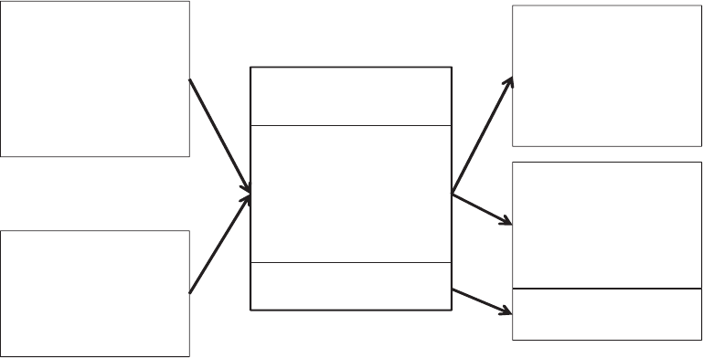
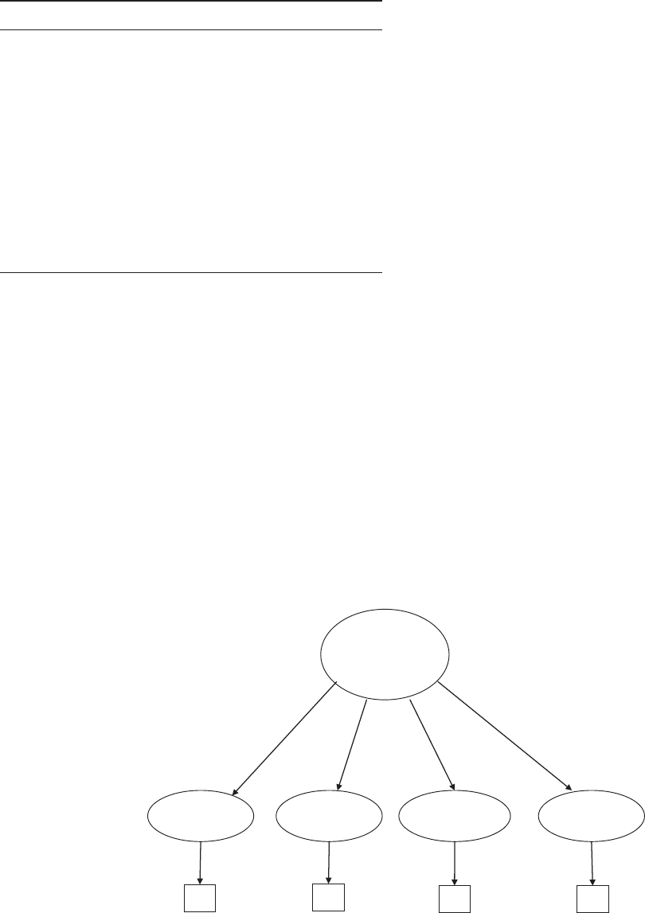

Antecedents and Consequences of Psychological and Team Empowerment
in Organizations: A Meta-Analytic Review
Scott E. Seibert, Gang Wang, and Stephen H. Courtright
University of Iowa
This paper provides meta-analytic support for an integrated model specifying the antecedents and
consequences of psychological and team empowerment. Results indicate that contextual antecedent
constructs representing perceived high-performance managerial practices, socio-political support, lead-
ership, and work characteristics are each strongly related to psychological empowerment. Positive
self-evaluation traits are related to psychological empowerment and are as strongly related as the
contextual factors. Psychological empowerment is in turn positively associated with a broad range of
employee outcomes, including job satisfaction, organizational commitment, and task and contextual
performance, and is negatively associated with employee strain and turnover intentions. Team empow-
erment is positively related to team performance. Further, the magnitude of parallel antecedent and
outcome relationships at the individual and team levels is statistically indistinguishable, demonstrating
the generalizability of empowerment theory across these 2 levels of analysis. A series of analyses also
demonstrates the validity of psychological empowerment as a unitary second-order construct. Implica-
tions and future directions for empowerment research and theory are discussed.
Keywords: empowerment, teams, high-performance work systems, job satisfaction, performance
Supplemental materials: http://dx.doi.org/10.1037/a0022676.supp
The concept of employee empowerment was introduced to the
management literature over thirty years ago by Kanter (1977).
Surveys have shown that empowerment has had a major impact on
management practice, as more than 70% of organizations have
implemented some form of empowerment for at least some part of
their workforce (e.g., Lawler, Mohrman, & Benson, 2001). The
concept of empowerment also continues to generate considerable
research interest. Still, a number of important questions remain
unanswered (Spreitzer, 2008). It is therefore important to develop
a fuller understanding of the nature of empowerment, the factors
that lead to employee feelings of empowerment, and the conse-
quences associated with an empowered workforce.
Two major perspectives on the empowerment phenomenon have
emerged (Liden & Arad, 1996; Spreitzer, 2008). Early, sociostruc-
tural approaches regarded empowerment as a set of structures,
policies, and practices designed to decentralize power and author-
ity throughout the organization, enabling employees at lower lev-
els in the organization to take appropriate action (Bennis & Nanus,
1985; Block, 1987; Kanter, 1977, 1983). Conger and Kanungo
(1988) were the first to introduce a psychological perspective on
empowerment. They argued that empowering organizational prac-
tices result in greater employee initiative and motivation only to
the extent that these practices provide informational cues that
enhance the employees’ effort–performance expectancies (Lawler,
1973) or feelings of self-efficacy (Bandura, 1986). Thomas and
Velthouse (1990) expanded upon this work by articulating a more
complete theoretical framework for psychological empowerment.
On the basis of their synthesis of a range of cognitive motivation
theories, they identified meaning, choice, competence, and impact
as the set of employee task assessments associated with intrinsic
task motivation.
Spreitzer (1995b) was the first to develop a multidimensional
instrument to assess psychological empowerment. On the basis of
the work of Thomas and Velthouse (1990), she defined psycho-
logical empowerment as intrinsic task motivation reflecting a sense
of control in relation to one’s work and an active orientation to
one’s work role that is manifest in four cognitions: meaning,
self-determination, competence, and impact. Meaning refers to the
alignment between the demands of one’s work role and one’s own
beliefs, values, and standards (Hackman & Oldham, 1980). Self-
determination is one’s sense of choice concerning the initiation or
regulation of one’s actions (Deci, Connell, & Ryan, 1989). Com-
petence refers to one’s belief in one’s capability to successfully
perform work activities (Bandura, 1989; Lawler, 1973). Finally,
impact is one’s belief that one can influence strategic, administra-
tive, or operational activities and outcomes in one’s work unit
(Abramson, Seligman, & Teasdale, 1978; Ashforth, 1989). Con-
sistent with previous theorizing (e.g., Thomas & Velthouse, 1990),
the highest levels of intrinsic task motivation were proposed to
emerge only when all four cognitions are high.
This article was published Online First March 28, 2011.
Scott E. Seibert, Gang Wang, and Stephen H. Courtright, Department of
Management and Organizations, Tippie College of Business, University of
Iowa.
An earlier version of this paper was presented at the meeting of the
Academy of Management, Chicago, Illinois, August 2009. We thank
In-Sue Oh and Amy Colbert for advice on data analyses.
Correspondence concerning this article should be addressed to Scott E.
Seibert, Department of Management and Organizations, Tippie College of
Business, 108 John Pappajohn Business Building, Iowa City, IA 52242-
1994. E-mail: scott-seibert@uiowa.edu
Journal of Applied Psychology © 2011 American Psychological Association
2011, Vol. 96, No. 5, 981–1003 0021-9010/11/$12.00 DOI: 10.1037/a0022676
981

Spreitzer’s (1995b) formulation has proved seminal to research
on psychological empowerment. It is therefore surprising that,
over thirty years since the introduction of the empowerment con-
cept and fifteen years since the emergence of a dominant psycho-
logical empowerment instrument, no quantitative review of the
literature has been performed (Spreitzer, 2008). Thus, our primary
purpose in this paper is to conduct a meta-analytic review of the
antecedents, correlates, and consequences of psychological em-
powerment in work organizations.
This meta-analysis contributes to the literature on empowerment
in at least three ways. First, we integrate a broad range of theo-
retical perspectives—including sociostructural (e.g., Kanter,
1977), psychological (e.g., Spreitzer, 1995b), and team-based (e.g.,
Kirkman & Rosen, 1999) approaches to empowerment—that have
emerged over the last thirty years. By testing the relationships
specified in this model, we examine the nomological network
surrounding the empowerment construct at the individual and team
levels of analysis. We also explicitly compare the relative contri-
bution of the contextual and individual difference constructs as
antecedents of psychological empowerment. Furthermore, we ex-
amine the parallel relationships surrounding empowerment at the
individual and team levels to assess the extent of multilevel ho-
mology demonstrated by psychological empowerment theory
(Chan, 1998; Chen, Bliese, & Mathieu, 2005).
The second contribution of our paper is to examine several
potential boundary conditions on the effectiveness of psychologi-
cal empowerment. Understanding the influence of contextual vari-
ables on the effectiveness of a construct such as psychological
empowerment can greatly contribute to theory and practice (Johns,
2006). On the basis of speculations and debates in the literature,
we investigate the potential moderating effect of industry, occu-
pation, and culturally distinct geographic region on the relationship
of psychological empowerment and key outcomes.
Finally, the third major contribution of this study is an exami-
nation of the validity of psychological empowerment as a unitary
construct. Spreitzer (2008, p. 64) asked, “Is the potency in em-
powerment in the gestalt or the individual dimensions?” and noted
that confusion regarding the structure of the psychological em-
powerment construct can be an impediment to future research
progress. We therefore investigate this issue by conducting a
meta-analytic confirmatory factor analysis, examining discrimi-
nant validity among the four subdimensions of psychological
empowerment, and assessing the relative strength of the unitary
psychological empowerment construct relative to the four subdi-
mensions on our key dependent variables. Together, these three
contributions will help guide future theoretical and empirical work
on psychological empowerment.
Theoretical Framework
A legacy of Kanter’s (1977, 1983) original work on empower-
ment is that early researchers regarded organizational structures
and practices as indicators of empowerment. Current scholars now
view these factors as contextual antecedents of psychological
empowerment, rather than as empowerment itself (Kirkman &
Rosen, 1999; Seibert, Silver, & Randolph, 2004; Spreitzer, 1996,
2008). We categorize variables that capture employees’ percep-
tions of the organization or work environment into one of four
contextual antecedent categories (see Figure 1). For example,
several researchers (e.g., Combs, Liu, Hall, & Ketchen, 2006;
Liao, Toya, Lepak, & Hong, 2009; Patterson, West, & Wall, 2004)
have suggested that high-performance management practices (e.g.,
Lawler, 1986) would lead to higher levels of psychological em-
powerment through both cognitive and affective mechanisms.
Kanter (1977, 1983) identified social-political support as an im-
portant contextual antecedent of psychological empowerment.
Subsequent researchers (e.g., Kark, Shamir, & Chen, 2003; Kirk-
man & Rosen, 1999; Kraimer, Seibert, & Liden, 1999; Liden,
Wayne, & Sparrowe, 2000) have identified leadership and work
design characteristics as additional contextual antecedents en-
abling employee feelings of psychological empowerment. The
same set of constructs has been identified as contextual anteced-
ents to team-level empowerment as well (e.g., Chen, Kirkman,
Kanfer, Allen, & Rosen, 2007; Kirkman & Rosen, 1999). Figure 1
Psychological
Empowerment
Meaning
Self-Determination
Competence
Impact
Team
Empowerment
Contextual Antecedents
High-Performance
Managerial Practices
Socio-Political Support
Leadership
Work Design Characteristics
Individual Characteristics
Positive Self-Evaluation
Traits
Human Capital
Gender
Attitudinal Consequences
Job Satisfaction
Organizational Commitment
Strain
Turnover Intentions
Behavioral Consequences
Task performance
OCB
Innovation
Team Performance
Figure 1. Integrated individual and team empowerment framework.
982
SEIBERT, WANG, AND COURTRIGHT
therefore depicts a set of parallel contextual antecedents at the
individual and team levels of analysis. In addition, a range of
personality traits and individual characteristics have been identi-
fied as correlates of psychological empowerment. These relation-
ships are depicted on the left side of Figure 1.
As indicated in Figure 1, a broad range of attitudinal and
behavioral outcomes has been associated with psychological em-
powerment (e.g., Spreitzer, 1995b, 2008). Because psychologi-
cally empowered work is likely to fulfill intrinsic needs for auton-
omy and growth (e.g., Hackman & Oldham, 1980), researchers
have frequently proposed job satisfaction, commitment, and reten-
tion as outcomes of empowerment (e.g., Kraimer et al., 1999;
Liden et al., 2000). A core proposition of the theory is that
psychological empowerment will be related not only to work
attitudes but to positive forms of work performance as well due to
the more active orientation psychologically empowered employees
are said to take toward their work (Spreitzer, 1995b, 2008). Thus,
both in-role task performance and organizational citizenship be-
haviors have been proposed as individual-level behavioral out-
comes. Innovation behavior at work, in particular, has been seen as
a key outcome because of the active, persistent, and change-
oriented behaviors associated with psychological empowerment
(Spreitzer, 1995b). Researchers have also linked team empower-
ment to team performance, as depicted on the right side of the
figure. This framework thus integrates over thirty years of theory
and empirical research on empowerment and guides the develop-
ment of the hypotheses below.
Hypotheses
Contextual Antecedents of Psychological
Empowerment
High-performance managerial practices. Several different
but overlapping research streams (e.g., strategic human resource
management, Delery & Shaw, 2001; high-performance work sys-
tem, Huselid, 1995; high-involvement management, Lawler,
Mohrman, & Ledford, 1998; competitive advantage through peo-
ple, Pfeffer, 1994) have tried to identify a small set of management
and human resource best practices that organizations might use to
optimize the value they derive from their employees. The practices
that have been consistently identified in the literature—which we
refer to as high-performance managerial practices in this paper—
include open information sharing, decentralization, participative
decision making, extensive training, and contingent compensation
(Combs et al., 2006; Liao et al., 2009; Pfeffer, 1998; Zacharatos,
Barling, & Iverson, 2005). For this meta-analysis, we analyzed
studies that included psychological empowerment and any of these
practices (see Appendix A for details). High-performance mana-
gerial practices are thought to improve performance because they
increase the amount of information and control employees have
over their work; the level of work-related knowledge, skills, and
abilities possessed by employees; and the level of motivation
employees have to achieve the goals of the organization. As
Spreitzer (1996) and others (e.g., Liao et al., 2009; Patterson et al.,
2004) have suggested, high-performance managerial practices are
likely to facilitate higher levels of psychological empowerment
because they affect all four psychological empowerment cogni-
tions. Increased information and control means that employees will
see their work as personally meaningful because they understand
how their work role fits into the larger goals and strategies of the
organization. More information should also allow employees to
better determine for themselves what actions to take, thus increas-
ing feelings of self-determination. Furthermore, the enhanced
knowledge, skills, and ability resulting from high-performance
managerial practices will be reflected in employees’ feelings of
competence in work roles. Finally, the greater level of input and
control associated with high-performance managerial practices
means that employees will believe they have greater impact in
their work unit or organization.
Socio-political support. Socio-political support refers to the
extent to which elements in the work context provide an employee
with material, social, and psychological resources (Spreitzer,
1996). Many different sources of socio-political support have been
associated with psychological empowerment by previous research-
ers (e.g., Gomez & Rosen, 2001; Liden et al., 2000; Sparrowe,
1994), including the supportiveness of the climate of the organi-
zation, the employee’s perception that the organization values and
cares about him, and the level of trust the organization has in the
employee (see Appendix A for details). Social support theorists
(Hobfall, 1989; Taylor, 2007; Thoits, 1985) have suggested that
social support is a valuable resource that shapes people’s percep-
tions and emotional reactions. Considerable research evidence has
shown that this is true within organizational settings (Chiaburu &
Harrison, 2008; Colquitt, Conlon, Wesson, Porter, & Ng, 2001; Ng
& Sorensen, 2008; Rhoades & Eisenberger, 2002). Socio-political
support is thus likely to enhance perceptions of psychological
empowerment. For example, social support from peers and the
organization will signify to the employee that she is a valued and
accepted member of the organization, thus enhancing her feeling
that her work is personally meaningful. Such support will also
provide the employee with feelings of self-determination because
it is appropriate for her, as an accepted member of the organiza-
tion, to determine her own work goals and strategies. Socio-
political support will also enhance employees’ feelings of task
competence and impact because of the greater availability of the
material resources, power, and influence needed to accomplish
tasks and work-related goals.
Leadership. Spreitzer (2008) concluded, based on her narra-
tive review, that a supportive, trusting relationship with one’s
leader is an important contextual antecedent of psychological
empowerment. In this meta-analysis we examine all studies that
include psychological empowerment and any positive form of
leadership behavior (see Appendix A for details). We expect these
positive forms of leadership to increase employees’ perceptions of
psychological empowerment because of the important role leaders
play in shaping the work experience of followers (Liden, Spar-
rowe, & Wayne, 1997; Yukl, 2010). Leaders can supply informa-
tion about strategic or operational goals that allows employees to
see the value of their work and thus to enhance meaningfulness.
They may also allow their followers greater participation and
autonomy that will enhance the employees’ feelings of self-
determination and impact. Finally, leaders can act as role models
and provide employees with feedback and coaching. Role model-
ing and constructive feedback are important sources of self-
efficacy information that enhances feelings of competence (Ban-
dura, 1997). Thus, in our overall leadership category, we include
983
EMPOWERMENT META-ANALYSIS
all studies that examine the relationship of positive leadership
behaviors to psychological empowerment.
Work design characteristics. Although psychological em-
powerment theory has common roots with job characteristics the-
ory (Hackman & Oldham, 1980), it extends that theory in impor-
tant ways (Spreitzer, 1996). For example, both theories incorporate
the cognitions or critical psychological states of meaning and
self-determination as part of their models. However, psychological
empowerment theory also incorporates cognitions not included in
the job characteristics model, such as feelings of competence and
impact. Job characteristics theory explains how core job charac-
teristics (e.g., task significance, autonomy) are related to meaning
and self-determination, and meta-analytic results provide support
for these propositions (Fried & Ferris, 1987; Humphrey, Nahr-
gang, & Morgeson, 2007). Core job characteristics are likely to be
associated with the other components of psychological empower-
ment as well. Competence should be enhanced by work that is
more challenging (i.e., higher in skill variety or task significance),
along with feedback regarding the results of one’s efforts. These
factors support learning and enactive attainment, key factors pro-
moting higher self-efficacy (Bandura, 1997). The core job charac-
teristics of autonomy and task significance should also promote the
feeling that one has impact within one’s work unit, because of the
increased opportunity one has to personally make choices regard-
ing methods to accomplish tasks that are seen as important to the
organization. Thus, extending the logic of the job characteristics
model, we expected that all five core job characteristics would be
associated with psychological empowerment.
Hypothesis 1: Contextual factors including (a) high-perfor-
mance managerial practices, (b) socio-political support, (c)
positive leadership, and (d) work design characteristics will
be positively related to psychological empowerment.
Individual Characteristics Associated With
Psychological Empowerment
Positive self-evaluation traits. Thomas and Velthouse
(1990) placed particular emphasis on individual differences and
interpretive schemes as a significant influence on the subjective
task assessments that make up empowerment perceptions. Spre-
itzer (e.g., 1995b, 2008) also took an explicitly interactionist
perspective when she defined psychological empowerment as the
way individuals see themselves in relation to their task environ-
ment. According to this view, both contextual variables and indi-
vidual characteristics, especially those reflecting one’s self-
concept, should be considered as antecedents to perceptions of
psychological empowerment. Thus, we predicted that the core
self-evaluation (CSE) trait identified by Judge, Locke, and Dur-
ham (1997) would be an important antecedent of psychological
empowerment. This is because CSE is thought to represent the
fundamental appraisal one makes about one’s worthiness, compe-
tence, and capabilities in relation to one’s environment. The shared
variance among four lower order traits—locus of control, self-
esteem, generalized self-efficacy, and emotional stability—makes
up this construct. We included all of these individual differences in
the positive self-evaluation traits category for this meta-analysis
and hypothesized that those with higher positive self-evaluations
would report feeling more psychologically empowered.
Three mechanisms may explain this relationship. First, CSE
may influence the situations into which individuals select them-
selves (Judge & Hurst, 2007). Individuals with high CSE may seek
out challenging roles and therefore select themselves into organi-
zations or jobs that provide greater opportunity to experience
empowered work. Second, individuals with high CSE experience
more positive emotions and subjective well-being (Judge, Erez,
Bono, & Thoreson, 2002). These positive feelings may influence
the subjective task assessments that psychological empowerment
perceptions represent (Thomas & Velthouse, 1990). Finally, pre-
vious research has shown that people with high CSE are more
likely to choose self-concordant goals (Judge, Bono, Erez, &
Locke, 2005). Self-concordant goals are objectives that are con-
sistent with the individual’s enduring ideals, interests, and values
and are thus associated with intrinsic motivation (Sheldon & Elliot,
1999). Individuals who have high CSE are therefore more likely to
feel psychologically empowered because they are more likely to
choose intrinsically meaningful goals at work.
Hypothesis 2: Positive self-evaluation traits will be positively
associated with psychological empowerment.
Human capital and gender. We expected several other
individual characteristics would have positive associations with
psychological empowerment because they reflect the level of
knowledge, skill, or experience the individual brings to her work.
For example, one’s level of education, age, and work tenure are
typical human capital variables that reflects one’s productive ca-
pabilities (Becker, 1964). Higher levels of individual human cap-
ital should be positively associated with one’s ability to take action
and have a positive impact in the workplace, key indicators of
psychological empowerment. Higher level jobs are also likely to
reflect greater human capital on the part of the position holder.
They are likely to offer more discretion and more opportunities to
have a meaningful impact at work. Finally, we included gender on
an exploratory basis to see if any reliable differences exist in
empowerment.
Hypothesis 3: Human capital variables including (a) educa-
tion, (b) tenure, (c) age, and (d) job level will be positively
associated with psychological empowerment.
Relative Effects of Contextual Factors and Individual
Characteristics
A final important theoretical issue concerning the antecedents of
psychological empowerment is the contribution of contextual fac-
tors relative to individual characteristics in the formation of psy-
chological empowerment perceptions. The sociostructural ap-
proach tends to treat empowerment as an objective set of
management structures and practices with little room for system-
atic variation in the way individual employees react. Psychological
approaches also assume that contextual factors will have a pow-
erful impact on psychological empowerment, but, as discussed
above, they explicitly acknowledge a role for individual differ-
ences because of the perceptual perspective they take on empow-
erment (Conger & Kanungo, 1988; Spreitzer, 1995b; Thomas &
Velthouse, 1990). Thus, to more completely specify psychological
empowerment theory, we compare the relative contribution of
984
SEIBERT, WANG, AND COURTRIGHT
contextual antecedents (i.e., higher performance managerial prac-
tices, socio-political support, leadership, and work design charac-
teristics) as a set to the individual difference correlates of psycho-
logical empowerment (i.e., positive self-evaluation traits,
education, job level, age, and tenure) as a set. Because strong
theorizing is not currently warranted, we propose the following as
a research question: We expected the contextual variables to be
more strongly related than the individual differences to psycho-
logical empowerment.
Research Question 1: Are contextual factors more strongly
related than individual characteristics to perceptions of psy-
chological empowerment?
Attitudinal Consequences of Psychological
Empowerment
Job satisfaction. Job satisfaction has been conceptualized as
the extent to which one’s needs are fulfilled at work (Locke, 1976).
A sense of meaning and self-determination allow one to fulfill
important needs for growth through the experience of autonomy,
competence, and self-control at work (Deci & Ryan, 1985; Hack-
man & Oldham, 1980). In addition, feelings of competence and
impact augment the extent to which one’s work serves to fulfill
these innate needs, as they too reflect opportunities to experience
competence and control at work. Thus, psychologically empow-
ered workers are likely to experience more intrinsic need fulfill-
ment through work and therefore report higher levels of job
satisfaction.
Organizational commitment. Meyer, Becker, and Vanden-
berghe (2004) noted a strong correspondence between intrinsic
forms of motivation and affective commitment. The meaning
dimension of psychological empowerment in particular invokes
affective organizational commitment because it assesses the fit
between the demands of the work role and the individual’s needs
and values (Kristof-Brown, Zimmerman, & Johnson, 2005; Spre-
itzer, 1995b). In addition, feelings of autonomy, competence, and
impact are likely to increase the individual’s commitment to the
organization, as they will further enhance the ability of the indi-
vidual to express his values and interests through his work. Finally,
psychological empowerment should also be associated with in-
creased continuance commitment (Meyer & Allen, 1991), because
the loss of an empowering work arrangement may be viewed as the
sacrifice of something valuable that is difficult to replace with
another employer.
Strain. An important debate concerns the level of strain
experienced by empowered employees (Spreitzer, 2008). The la-
bor process theory perspective (e.g., Harley, 1999; Harley, Allen,
& Sargent, 2007) suggests that empowerment is a form of work
intensification that involves increasing the scope of employee
responsibilities without a concomitant increase in rank or pay.
Hardy and Leiba-O’Sullivan (1998) further noted that little real
power or control actually flows to “empowered” employees. Ac-
cording to this perspective, empowerment should lead to increased
feelings of strain among employees. On the other hand, self-
determination, competence, and impact should function together to
reduce strain even if work demands go up because they increase
feelings of control (Matteson & Ivancevich, 1987; Spreitzer, Kiz-
ilos, & Nason, 1997). Perceived control over potential stressors
reduces perceived strain (Karasek, 1979; Spector, 1986). Thus, our
expectation was that psychologically empowered employees
would report lower levels of strain due to an increased sense of
control at work.
Turnover intentions. Because individuals are likely to view
psychologically empowering work as a valuable resource provided
by the organization, employees will feel obligated to reciprocate
such a beneficial work arrangement with increased loyalty to the
organization and continued employment (Blau, 1964). Empower-
ing work arrangements may also be difficult to find or establish
with another employer. This lowers the net benefit associated with
alternative job opportunities and thus further lowers the probability
of turnover (Griffeth, Hom, & Gaertner, 2000). We thus expected
that psychological empowerment would be related to lower
turnover.
Hypothesis 4: Psychological empowerment will be positively
related to the employee work attitudes of (a) job satisfaction
and (b) organizational commitment and will be negatively
related to (c) strain and (d) turnover intentions.
Behavioral Consequences of Psychological
Empowerment
Task performance. Theorists have argued that psychologi-
cally empowered employees anticipate problems and act indepen-
dently in the face of risk or uncertainty, exert influence over goals
and operational procedures so that they can produce high-quality
work outcomes, and demonstrate persistence and resourcefulness
in the face of obstacles to work goal accomplishment (Spreitzer,
1995b, 2008). Meaning and self-determination, two components of
psychological empowerment, have already been shown to have a
small but statistically significant relationship with job performance
(Fried & Ferris, 1987; Humphrey et al., 2007), as explained by job
characteristics theory (Hackman & Oldham, 1980). Psychological
empowerment assesses feelings of competence and impact in
addition to meaning and self-determination. Empirical research
indicates that competency (i.e., self-efficacy) and impact beliefs
increase performance by increasing task effort and persistence
(e.g., Bandura & Locke, 2003; Sadri & Robertson, 1993; Stajkovic
& Luthans, 1998; for some limiting conditions, see Vancouver &
Kendall, 2006). For these reasons, we expected psychological
empowerment would be positively associated with task perfor-
mance.
Organizational citizenship behaviors. According to psy-
chological empowerment theory, employees who feel a sense of
empowerment are likely to take an active orientation toward their
work and perform “above and beyond” the call of duty (Spreitzer,
2008). Meaningful work over which one has individual discretion
is likely to lead to organizational citizenship behaviors (OCBs)
because it fosters a sense of identification and involvement in the
overall workplace, not just one’s defined work role. Competence
and impact are likely to further encourage OCBs because the
employee will feel capable of achieving positive outcomes in her
work unit if she tries (Bandura, 1997). Thus, psychological em-
powerment will likely be associated with OCBs.
Innovation. A key objective of empowerment is to release
the potential within employees to make a positive change in their
work roles, work units, or organization (Block, 1987; Randolph,
985
EMPOWERMENT META-ANALYSIS
1995). In conjunction with the motivation to be creative associated
with intrinsic motivators such as meaning and self-determination
(Amabile, 1988), feelings of competence and impact are likely to
enhance the ability of employees to implement their ideas and
suggestions for change, resulting in greater innovation at work. We
thus expected psychological empowerment would be positively
associated with innovation (Kanter, 1983; Spreitzer, 1995b).
Hypothesis 5: Psychological empowerment will be positively
related to the employee work behaviors of (a) task perfor-
mance, (b) OCB, and (c) innovation.
Antecedents and Consequences of Team-Level
Empowerment
The final set of hypotheses concerns the antecedents and out-
comes associated with team empowerment. Empowerment has
been conceptualized at the individual and team levels of analysis
(e.g., Kirkman & Rosen, 1997, 1999). Individual psychological
empowerment focuses on how empowered the individual feels
personally, whereas team empowerment refers to shared percep-
tions among team members regarding the team’s collective level of
empowerment (Chen, Kirkman, et al., 2007). Teams that are more
empowered feel that they have more intrinsically meaningful or
worthwhile work and, as a group, have a higher degree of choice
or discretion in deciding how they carry out their team tasks; they
believe that they have the collective ability to accomplish work-
related tasks and that these tasks have an impact or significant
importance for their organization. Although team performance is
more than the simple aggregation of the individual performance of
team members (Kozlowski & Bell, 2003), scholars have proposed
that empowerment shares similar meanings and functional rela-
tionships at the individual and team levels (Chen, Kirkman, et al.,
2007; Kirkman & Rosen, 1997). Thus, on the basis of the logic as
developed in the hypotheses above for individual empowerment,
we expected organizational high-performance managerial prac-
tices, socio-political support of the team, supportive leadership of
the team, and team-level work design characteristics would be
positively related to feeling of team empowerment. Team size was
also included as an exploratory antecedent.
Hypothesis 6: Contextual factors including (a) high-perfor-
mance managerial practices, (b) socio-political support for the
team, (c) positive leadership, and (d) work design character-
istics will be positively related to team empowerment.
Likewise, we expected team empowerment would be positively
related to team performance (Chen, Kirkman, et al., 2007; Kirk-
man & Rosen, 1997). As with individuals, empowered teams are
likely to be motivated by a sense of ownership or responsibility
over their work; they are likely to take an active orientation toward
their work and their work environment, seeking continuous im-
provement in work processes and seeking innovative solutions to
work problems; and they are likely to strive to produce higher
quality work products and services. Empowered teams are there-
fore likely to be more effective and productive.
Hypothesis 7: Team empowerment will be positively related
to team performance.
Homology of Empowerment Relationships Across
Individual and Team Levels
Our final formal hypothesis examines the extent of multilevel
homology across individual and team levels of analysis for em-
powerment theory. Comparisons across levels, while rare in the
literature, are important because they extend a theory’s parsimony,
breadth, and explanatory power (Chen, Bliese, & Mathieu, 2005).
According to a typology developed by Chen et al., metaphoric
homology posits only that parallel relationships will be consis-
tently significant across levels of analysis. Identical homology, on
the other hand, predicts that parallel relationships will be statisti-
cally indistinguishable in direction and magnitude across levels.
Because identical homology requires the most precise predictions,
it represents the most mature stage of multilevel theory testing
(Chen et al., 2005).
Researchers have theorized that empowerment is a construct
with very similar functional relationships at the individual and
team levels (e.g., Chen et al., 2007; Kirkman & Rosen, 1997,
1999). Empowerment is a form of motivation, and the limited
research on motivation at multiple levels that exists suggests that
motivational mechanisms have similar antecedents and effects
across individual and team levels of analysis (e.g., Chen, Thomas,
& Wallace, 2005; DeShon, Kozlowski, Schmidt, Milner, & Wiech-
mann, 2004; Marks, Mathieu, & Zaccaro, 2001). Although pro-
cesses related to the development of coordination in teams might
weaken the positive effects of motivation at the team level, in
established teams, such as those likely to be found in the field
studies upon which this meta-analysis is based, coordination issues
are likely to be worked out and individual motivation and effort are
likely to become focused on team outcomes (Kozlowski, Gully,
Nason, & Smith, 1999). On the basis of these theories and find-
ings, we hypothesized identical homology for empowerment
across individual and team levels of analysis.
Hypothesis 8: Empowerment will demonstrate identical ho-
mology across levels.
Boundary Conditions of Psychological Empowerment
Scholars have long speculated on the extent to which the posi-
tive effects of empowerment generalize across situations and set-
tings (Spreitzer, 2008). Differences across context can have im-
portant implications for empowerment theory and practice
(Bamberger, 2008; Johns, 2006). For example, evidence for con-
textual moderation would suggest additional variables and pro-
cesses that may limit the influence of empowerment on employee
attitudes and behaviors. On the other hand, failure to find moder-
ation extends the parsimony and generalizability of psychological
empowerment theory. A number of researchers have argued that
certain types of industries (Batt, 2002; Combs et al., 2006), occu-
pations (Avolio, Zhu, Koh, & Bhatia, 2004; Kraimer et al., 1999),
and cultures (Ergeneli, Sag, Ari, & Metin, 2007; Seibert et al.,
2004) may moderate the effectiveness of empowerment. Because
little systematic theory has been developed in this area, we develop
only a set of exploratory research questions below.
With regard to industry differences, some scholars have specu-
lated that empowerment is likely to be most effective in the service
sector, because service workers tend to have more opportunity to
986
SEIBERT, WANG, AND COURTRIGHT
engage in discretionary behavior (e.g., with a customer) than their
counterparts in a manufacturing environment, where standardized
procedures and bureaucratic structures tend to prevail (Batt, 2002).
However, Combs et al. (2006) argued that more direct contact with
customers itself provides work motivation, obviating the need for
intrinsic motivation and thus empowerment. Due to these contra-
dictory predictions, a direction is not specified for this moderation
hypothesis; however, to the extent that there are differences, public
sector employees would be expected to fall between the extremes
of manufacturing and service employees.
A similar logic regarding discretion, motivation, and employ-
ees’ ability to influence outcomes applies for occupational type.
Early work by Kanter (1983) as well as Spreitzer (1996) focused
on middle managers as the target of empowerment efforts, perhaps
in the belief that managerial employees would have the greatest
untapped ability and opportunity to impact work unit performance.
On the other hand, work design theory and other approaches to
high-involvement work systems have often focused on nonmana-
gerial employees (Hackman & Oldham, 1980; Parker & Wall,
1998). Empowerment might have a stronger effect among non-
managers, due to a lower initial baseline for discretion and control
among such employees (Kraimer et al., 1999). Again, we made
no directional hypothesis but would expect results for the
professional/technical employees to be most similar to those for
managerial employees, due to the similar levels of skill and au-
tonomy inherent in professional work.
Finally, we explored culturally distinct geographic region as a
moderator. Several scholars have suggested that cultural values
may moderate the effects of empowerment (Avolio et al., 2004;
Seibert et al., 2004). For example, high power distance cultures
may react less positively to psychological empowerment because
of its reliance upon power-sharing organizational structures and
practices. Unfortunately, too few studies measuring psychological
empowerment and cultural values have been conducted for us to
make reliable comparisons. We therefore explored the moderating
effects of broad geographic regions that are thought to be cultur-
ally distinct in hopes of stimulating future research on cultural
values and psychological empowerment.
Research Question 2: Do industry, occupation, or culturally
distinct geographic region moderate the relationship of psy-
chological empowerment to the outcomes of our model?
Construct Validity of Psychological Empowerment
Our final set of research questions addresses the appropriateness
of viewing psychological empowerment as a unitary second-order
construct rather than as four distinct constructs. Spreitzer (1995b)
explicitly modeled empowerment as a second-order factor ac-
counting for the shared variance among the four lower order
factors of meaning, competence, self-determination, and impact.
Following Spreitzer (1995b), many researchers have specified
psychological empowerment as a single, unidimensional construct
(e.g., Chen & Klimoski, 2003; Erdogan & Bauer, 2009; Zhang &
Bartol, 2010). However, another early study by Spreitzer herself
(Spreitzer et al., 1997) found results suggesting that the meaning
and competence subdimensions of empowerment were related to
attitudinal outcomes but only the impact subdimension was related
to work effectiveness. As a result, other studies have formulated
different hypotheses for the relationship of each of the four di-
mensions of empowerment with criterion variables (e.g., Ergeneli
et al., 2007; Kraimer et al., 1999; Liden et al., 2000; Wang & Lee,
2010).
This is a fundamental question for psychological empowerment
theory (Spreitzer, 2008). If relationships with outcome variables
differ by subdimensions, it would be appropriate to treat each
subdimension as a separate construct. This would call into question
the idea of a unitary psychological empowerment construct. On the
other hand, if apparent differences across subdimensions are
merely the result of differences in subscale reliability or sampling
error (Hunter & Schmidt, 2004), substantive conclusions about the
relationships of subdimensions to different outcomes are not well
founded. Building upon an approach used by LePine, Erez, and
Johnson (2002), we conduct three analyses with our meta-analytic
data to examine the structure of the psychological empowerment
construct.
First, we explore the relationships of each separate empower-
ment subdimension with our dependent variables. Evidence of
discriminant validity among the subdimensions is supplied if the
subdimensions exhibit statistically different relationships with a
given outcome. If differences in the direction or magnitude of
these relationships are not in evidence, treatment of psychological
empowerment as a single construct is supported. Second, we
compare the strength of the unitary psychological empowerment
construct as a predictor of our outcome variables to the strength of
the four separate subdimensions. If any of the separate subdimen-
sions demonstrate stronger relationships with an outcome variable
than does the global unitary construct, use of the global construct
is questionable. If not, use of the global construct is further
justified. Finally, we use confirmatory factor analysis based upon
meta-analytic correlations among the four subdimensions to di-
rectly assess the fit of the hierarchical model of psychological
empowerment originally examined by Spreitzer (1995b) but rarely
assessed in published studies since that time. Given the complex
nature of these analyses, we posed only the following general
research question:
Research Question 3: Should psychological empowerment be
treated as a unitary construct?
Method
Identification of Studies and Criteria for Inclusion
We performed an extensive electronic and manual search using
psychological empowerment and empowerment as the keywords to
identify published articles, conference papers, working papers, and
doctoral dissertations. For the electronic search, we used Psy-
cINFO and Web of Science databases. In addition, all articles
citing Spreitzer (1995a, 1995b, 1996; Spreitzer et al., 1997), as
indicated by the Social Sciences Citation Index, were examined.
We also obtained relevant paper presentations from recent schol-
arly meetings and performed a Google Scholar search to look for
unpublished working papers. A manual search was conducted as of
July 2010 to account for articles not yet included in the electronic
databases. We searched in the following journals considered to be
influential in the area (Podsakoff, Mackenzie, Bachrach, & Pod-
sakoff, 2005): Academy of Management Journal, Administrative
987
EMPOWERMENT META-ANALYSIS

Science Quarterly, Journal of Applied Psychology, Organizational
Behavior and Human Decision Processes, Personnel Psychology,
Strategic Management Journal, Journal of Management, Journal
of Organizational Behavior, and Leadership Quarterly. In addi-
tion, we sent e-mail solicitations to subscribers of the Academy of
Management listservs to get in-press and unpublished studies.
These searches uncovered more than 1,000 abstracts of published
articles, dissertations, working papers, and conference presenta-
tions.
The above abstracts were reviewed for content and consid-
ered for inclusion in the meta-analysis. For a study to be
included in the present review, it had to meet the following
criteria. First, the article had to report the statistical information
needed to calculate the correlations among the variables. Sec-
ond, a study must have investigated at least one relationship
between psychological empowerment and its contextual ante-
cedents or consequences at the individual or team level. Third,
a study must have been based on adult participants and con-
ducted in an organizational field setting rather than in a labo-
ratory. This allowed us to generalize our results to the popula-
tion of working adults. These exclusions resulted in a final set
of 142 articles representing 151 independent samples, including
79 published studies and 63 unpublished dissertations and
working papers. These articles are marked in the References
section by an asterisk.
Coding Procedures
Variables were coded into the prescribed contextual anteced-
ents, correlates (individual characteristics), and consequences cat-
egories according to the category definitions and coding rules we
established. For a detailed list of antecedent, correlate, and conse-
quence variables within each category, please refer to Appendices
A and B.
For individual-level psychological empowerment, the majority
of the studies (72%, or 92 studies) used Spreitzer’s (1995b) scale.
For those studies that either developed their own measures (e.g.,
Chiles & Zorn, 1995; Menon, 1995) or used other measures of
psychological empowerment (e.g., Short & Rinehart, 1992), we
carefully examined the definition and wording of the measures.
Only those measures that were explicitly labeled as “empower-
ment” (e.g., Wu, 1994), or “psychological empowerment” (e.g.,
Lawrence, 1997) and assessed the psychological states necessary
for individuals to feel a sense of intrinsic task motivation were
accepted as equivalent measures of psychological empowerment.
1
To eliminate any potential contamination, we based all
subdimension-level analyses (e.g., correlations among the four
subdimensions) on studies that used Spreitzer’s (1995b) 12-item
scales. For team-level empowerment, the majority of studies (63%,
or 12 studies) used either Kirkman and Rosen’s (1999) team
empowerment scale or Spreitzer’s (1995b) scale. All measures
were conceptualized as team members’ shared perceptions of
collective level of empowerment.
2
To ensure coding accuracy and reliability, all three authors
independently coded all of the articles. For individual-level psy-
chological empowerment, the overall consensus rate was 90%. Our
agreement on how contextual antecedents were coded was 83%;
our agreement on coding of the effect sizes was 96%; and our
agreement on the reliabilities of the variables was 92%. For team-
level empowerment, the consensus rate was 90%: All of our
disagreements focused on how team antecedents were coded.
Eventually, for both individual- and team-level studies, all discrep-
ancies were resolved through discussion.
Meta-Analytic Techniques
We chose a random-effect model of meta-analysis implemented
with hierarchical linear modeling (HLM) software (Bryk &
Raudenbush, 1992).
3
This method provides parameter estimates
and can be used to test the significance of differences between
parameters based on the entire data set rather than subsets of the
data (Erez, Bloom, & Wells, 1996). Prior research on meta-
analytic methods (Erez et al., 1996; Field, 2005; Hunter &
Schmidt, 2004; Schmidt & Hunter, 1999) has shown that random
effect approaches, such as the one recommended by Bryk and
Raudenbush (1992), generate more accurate parameter estimates
than do fixed effect approaches.
We followed the detailed procedure described in LePine et al.
(2002, pp. 56–57) to conduct meta-analyses with HLM software.
In particular, we performed two sets of analyses. The first set of
analyses was based on an unconditional model (i.e., one without
moderators) to estimate the meta-analytic correlations between
psychological empowerment and its antecedents, correlates, and
consequences as well as the meta-analytic correlations among the
subdimensions of psychological empowerment. This is similar to
estimating the grand mean for each relationship in a multilevel
model. Finding significant between-studies variance (
2
) suggests
that primary correlations are not homogenous and that study char-
acteristics not included in the model may serve as moderators. We
then back-transformed the grand means to normal correlations
using Equation 14 in Erez et al. (1996, p. 289) and reported these
correlations.
The second sets of analyses were based on a conditional model
in which covariates (moderators) were modeled by the use of
dummy variables. For example, to compare the relative magnitude
of the relationships of the four subdimensions with the conse-
quences, we used one subdimension (meaning) as the reference
group and used three dummy variables to capture the remaining
three subdimensions of psychological empowerment. As in regres-
sion analysis, HLM outputs provide intercept coefficient for the
reference group and regression coefficients for dummy coded
groups. If a coefficient is significant, this means that the specific
1
To examine whether the use of different psychological empowerment
measures may moderate the individual-level relationships in Tables 1 and
3, we constructed a conditional model in which studies that used Spre-
itzer’s (1995b) scale were coded as the reference group. The results showed
no evidence of moderating effects.
2
Similarly, to test whether the use of different psychological em
-
powerment measures may moderate the relationship between team-level
empowerment and team performance (both self- and non-self-reports),
we constructed a conditional model. Studies that used Spreitzer’s
(1995b) scale was coded as the base group, and studies that used
Kirkman and Rosen’s (1999) scale and all other scales were dummy
coded as two categories. The results showed no evidence of moderating
effect.
3
We thank the anonymous reviewer who suggested that we use HLM
for these analyses.
988
SEIBERT, WANG, AND COURTRIGHT

dummy-represented group (e.g., competence) has a significantly
different correlation with the consequence of interest (e.g., orga-
nizational commitment) than does the reference group (e.g., mean-
ing). In addition, the sign of the regression coefficient indicates
whether the specific dummy-coded group has a significantly
higher relationship (if the sign is positive) or lower relationship (if
the sign is negative) with the consequence than does the reference
group.
Reliability coefficients of variables reported in the original
study were used to correct for measurement error in correlations
before they were transformed into Hotelling’s and Fisher’s z to
normalize their distribution (Erez et al., 1996). For team-level
studies, ICC(2), an index of the reliability of group means, was
used as the reliability estimate whenever such information was
available (e.g., Combs et al., 2006, p. 512). For studies that did
not report reliability information, we used the average reliabil-
ity obtained from those studies that did report data for that
variable. The average reliability coefficient for psychological
empowerment and its antecedents and consequents was com-
puted by taking the arithmetic mean of the reliability coeffi-
cients reported in primary studies. When we estimated true
mean population correlations between psychological empower-
ment and its antecedents and consequences and the moderating
effect of between-studies characteristics (e.g., occupation; see
Tables 4 and 5), only one effect size was taken from each
independent sample. If original studies reported multiple mea-
sures of the same construct-level relationship within a single
sample (e.g., correlations of each subdimension of psycholog-
ical empowerment with managerial effectiveness; Spreitzer,
1995b), we computed a composite correlation with the formula
provided in Hunter and Schmidt (2004, p. 436). Otherwise, the
average of the raw correlations was used. This reduces the
influence of measurement error on within-studies variance
(Erez et al., 1996).
We present the uncorrected population correlation estimate
(r), the population correlation corrected for unreliability (r
c
),
the number of different studies (k
d
), the number for correlations
(k
c
), the total number of participants in the studies (N), and the
between-studies variance (
2
) whenever it is feasible. The null
hypothesis that between-studies variance is zero (
2
ϭ 0) is
assessed by a Cochran chi-square test (Cochran, 1937). If the
chi-square test is statistically significant, potential moderators
(e.g., industry, occupation) can be modeled and tested. We also
present the 95% confidence intervals (CIs). If a 95% confidence
interval does not include zero, this indicates that the corrected
meta-analytic correlation is statistically significant at the .05
level. The cutoff value of the minimum number of primary
studies to be included in each meta-analysis was set to three
(Chambless & Hollon, 1998).
We used LISREL Version 8 (Jöreskog & Sörbom, 2005) to
conduct a hierarchical confirmatory factor analysis using the
four components of psychological empowerment. The meta-
analytically derived correlations among the four subdimensions
and the harmonic mean sample size were used as inputs
(Viswesvaran & Ones, 1995). Following the recommendations
by Hu and Bentler (1999), we evaluated model fit using the
joint criteria of the standard root mean residual (SRMR) and the
comparative fit index (CFI), which do the best job of balancing
Type I and Type II error rates. Hu and Bentler recommended
that a SRMR value less than or equal to .08 and a CFI values
greater than or equal to .96 be regarded as a good model fit.
Results
Antecedents of Psychological Empowerments
Table 1 presents the meta-analytic correlations among psycho-
logical empowerment and its antecedents. Results in Table 1 (see
coefficients in column 5) show that all of the predicted antecedents
were positively related to psychological empowerment. Consistent
with Hypothesis 1, all of the contextual antecedents, namely,
high-performance managerial practices, socio-political support,
leadership,
4
and work design characteristics, exhibited relatively
strong relationships with psychological empowerment (Cohen,
1988). In addition, because the 95% CIs of all these meta-analytic
correlations exclude zero, the positive relationships between these
contextual antecedents and psychological empowerment are sig-
nificantly greater than zero at the .05 level (Whitener, 1990).
Hypotheses 2 and 3 referred to several individual character-
istics thought to be correlated with psychological empower-
ment. Participants’ positive self-evaluation traits display a
strong positive relationship with psychological empowerment
(r
c
ϭ .48, N ϭ 5,273), and the 95% CI excludes zero. Thus,
Hypothesis 2 was supported. Hypothesis 3 posits that human
capital variables, including education, job level, tenure, and
age, will have positive relationships with psychological em-
powerment. Results in Table 1 provide mixed support for this
hypothesis. Job level, tenure, and age are positively related to
psychological empowerment (r
c
ϭ .19, .11, and .11, respec
-
tively), and their 95% CIs did not include zero. However, the CI
for education did include zero. Although not specifically hy-
pothesized, we found that men and women did not significantly
differ in feelings of psychological empowerment; the 95% CI of
gender [Ϫ.10, .00] includes zero.
Research Question 1 suggests that the effect size of the contex-
tual constructs would be larger than the effect size of the individual
characteristics as a set. The set of results shown in Table 2 supports
this speculation. Although the individual characteristics are signif-
icantly related to perceptions of psychological empowerment (cor-
rected coefficient ϭ .14, p Ͻ .01), the positive and significant
estimate for the contextual constructs (corrected coefficient ϭ .42,
p Ͻ .01) demonstrates that the set of contextual factors is more
strongly related to psychological empowerment than are the indi-
vidual characteristics. However, inspection of Table 1 suggests
that positive self-evaluation traits have a stronger relationship than
the human capital variables with psychological empowerment. To
test this observation, we ran a conditional model with the positive
self-evaluation traits as the reference group and each of the human
capital variables as dummy-coded groups. The second set of re-
sults in Table 2 show that the human capital variables each have a
4
Given that transformational leadership and leader–member exchange
theories have clear theoretical links to psychological empowerment, we
examined their relationships with psychological empowerment separately.
We found that transformational leadership and leader–member exchange
yielded similar results to other positive leadership antecedents (r
c
ϭ .42,
N ϭ 4,628; r
c
ϭ .54, N ϭ 7,331, respectively).
989
EMPOWERMENT META-ANALYSIS
significantly weaker relationship with psychological empower-
ment than did the self-evaluation traits. We therefore reexamined
Research Question 1, this time using only positive self-evaluation
traits as the reference category. The nonsignificant results for each
of the contextual variables indicate that no contextual variable is
more strongly related to psychological empowerment than is the
positive self-evaluation trait. Overall, these results indicate that the
contextual antecedents and positive self-evaluation traits have ef-
fects on psychological empowerment that are not statistically
distinguishable from each other, but they are stronger than the
effects of the human capital variables.
Attitudinal and Behavioral Consequences of
Psychological Empowerment
Results in Table 3 summarize the relationships among psycho-
logical empowerment and its consequences. Psychological em-
powerment was positively related to job satisfaction and organi-
Table 1
Meta-Analytic Antecedents of Individual-Level Psychological Empowerment (ILPE)
Variable Alpha of variable Alpha of ILPE r [95% CI] r
c
[95% CI]
K
d
; K
c
; N
2
Contextual antecedents
High-performance managerial practices .82 .80 .38 [.31, .44] .48 [.39, .56] 27; 27; 12,357 .075
ءء
Social-political support .81 .80 .37 [.31, .42] .48 [.41, .54] 49; 49; 21,659 .091
ءء
Leadership .88 .82 .43 [.38, .47] .53 [.45, .60] 51; 51; 16,979 .131
ءء
Work design characteristics .75 .79 .45 [.34, .54] .58 [.46, .68] 12; 12; 3,907 .080
ءء
Individual characteristics
Positive self-evaluation traits .72 .83 .33 [.23, .41] .48 [.26, .65] 9; 9; 5,273 .129
ءء
Gender (M ϭ 0; F ϭ 1) .84 Ϫ.05 [Ϫ.09, .00] Ϫ.05 [Ϫ.10, .00] 25; 25; 9,128 .013
ءء
Education .82 .04 [.00, .07] .04 [.00, .07] 20; 20; 6,425 .003
ء
Job level .73 .17 [.02, .31] .19 [.03, .34] 5; 5; 4,550 .032
ءء
Tenure .84 .10 [.06, .13] .11 [.06, .15] 28; 28; 11,421 .008
ءء
Age .81 .10 [.06, .13] .11 [.07, .15] 36; 36; 12,954 .010
ءء
Note. r ϭ uncorrected population correlation; 95% CI ϭ 95% confidence interval around the population correlation; r
c
ϭ population correlation corrected
for unreliability; K
d
ϭ number of different studies; K
c
ϭ number of correlations; N ϭ total sample size;
2
ϭ between-studies variance.
ء
p Ͻ .05.
ءء
p Ͻ .01.
Table 2
Conditional Model Estimates for Relative Impact of the Antecedents on Individual-Level
Psychological Empowerment
Fixed effect Uncorrected coefficient Corrected coefficient
Individual-level psychological empowerment
(K
d
ϭ 109; K
c
ϭ 237; N ϭ 41,900)
Individual characteristics
a,b
.12
ءء
.14
ءء
Contextual factors
c
.31
ءء
.42
ءء
Individual-level psychological empowerment
(K
d
ϭ 52; K
c
ϭ 98; N ϭ 21,657)
Positive self-evaluation traits
a
.33
ءء
.52
ءء
Education Ϫ.30
ءء
Ϫ.49
ءء
Job level Ϫ.16
ءء
Ϫ.32
ءء
Tenure Ϫ.24
ءء
Ϫ.41
ءء
Age Ϫ.23
ءء
Ϫ.41
ءء
Individual-level psychological empowerment
(K
d
ϭ 96; K
c
ϭ 148; N ϭ 37,536)
Positive self-evaluation traits
a
.34
ءء
.52
ءء
High-performance managerial practices .05 .00
Socio-political support .05 .00
Leadership .11 .07
Work design characteristics .14 .14
Note. K
d
ϭ number of different studies; K
c
ϭ number of correlations; N ϭ total sample size.
a
The base category.
b
Including positive self-evaluation traits, education, job level, tenure, and age.
c
In
-
cluding work design characteristics, high-performance managerial practices, socio-political support, and lead-
ership.
ء
p Ͻ .05.
ءء
p Ͻ .01.
990
SEIBERT, WANG, AND COURTRIGHT
zational commitment and negatively related to turnover intentions
and strain. Because the 95% CIs exclude zero, these relationships
are statistically significant (p Ͻ .05). Thus, Hypothesis 4 was
supported. In addition, results in Table 3 show that psychological
empowerment was positively related to task performance, OCB,
and innovation at work. All of these positive relationships are
distinguishable from zero, thus supporting Hypothesis 5. Note that
the results hold for both self-rated and non-self-rated (e.g.,
supervisor-rated) behavioral outcomes. Also note that the tau-
squares for all of the population level correlation estimates in
Table 1 and Table 3 were statistically significant, justifying our
search for moderators.
Antecedents and Consequences of Team-Level
Empowerment
Table 4 shows that, consistent with Hypothesis 6, high-perfor-
mance managerial practices, socio-political support, leadership,
and work design characteristics were all significantly related to
team empowerment (p Ͻ .05). As shown in Table 4, and in
support of Hypothesis 7, team empowerment was positively re-
lated to team performance (r
c
ϭ .51, N ϭ 1,854), and this result
held for the subsample that included only non-self-rated perfor-
mance measures (r
c
ϭ .43, N ϭ 1,561). These positive relation
-
ships were statistically significant (p Ͻ .05). Note that tau-square
was statistically significant for all of the relationships in Table 4,
Table 3
Meta-Analytic Consequences of Individual-Level Psychological Empowerment (ILPE)
Variable Alpha of variable Alpha of ILPE r [95% CI] r
c
[95% CI]
K
d
; K
c
; N
2
Attitudinal consequences
Job satisfaction .82 .81 .52 [.47, .56] .64 [.60, .69] 53; 53; 17,875 .078
ءء
Organizational commitment .79 .80 .49 [.45, .53] .63 [.56, .69] 31; 31; 14,344 .084
ءء
Strain .73 .80 Ϫ.28 [Ϫ.36, Ϫ.20] Ϫ.37 [Ϫ.48, Ϫ.26] 20; 20; 7,764 .082
ءء
Turnover intentions .85 .79 Ϫ.30 [Ϫ.37, Ϫ.22] Ϫ.36 [Ϫ.44, Ϫ.27] 17; 17; 8,384 .042
ءء
Behavioral consequences
Task performance .80 .80 .26 [.20, .31] .36 [.24, .47] 34; 34; 8,774 .153
ءء
Task performance
a
.84 .82 .21 [.15, .26] .27 [.20, .34] 22; 22; 6,118 .028
ءء
Task performance
b
.74 .76 .33 [.21, .44] .54 [.21, .76] 12; 12; 2,656 .480
ءء
OCB .84 .79 .28 [.19, .36] .38 [.23, .52] 17; 17; 7,461 .123
ءء
OCB
a
.84 .80 .24 [.14, .33] .34 [.14, .50] 11; 11; 3,174 .120
ءء
OCB
b
.85 .76 .36 [.18, .52] .47 [.21, .66] 6; 6; 4,287 .133
ءء
Innovation at work .92 .82 .29 [.18, .39] .33 [.21, .45] 9; 9; 3,110 .041
ءء
Innovation at work
a
.93 .81 .24 [.18, .31] .28 [.20, .36] 8; 8; 2,027 .010
ءء
Note. r ϭ uncorrected population correlation; 95% CI ϭ 95% confidence interval around the population correlation; r
c
ϭ population correlation corrected
for unreliability; K
d
ϭ number of different studies; K
c
ϭ number of correlations; N ϭ total sample size;
2
ϭ between-studies variance; OCB ϭ
organizational citizenship behavior.
a
Results are based on non-self-rated outcome measures.
b
Results are based on self-rated outcome measures.
ءء
p Ͻ .01.
Table 4
Meta-Analytic Antecedents and Consequences of Team Empowerment
Variable
Reliability
of variable
Reliability of
team empowerment r [95% CI] r
c
[95% CI]
K
d
; K
c
; N
2
Antecedents
High-performance managerial practices .76 .77 .42 [.28, .54] .52 [.39, .63] 7; 7; 875 .029
ءء
Socio-political support .73 .82 .40 [.27, .51] .56 [.18, .79] 3; 3; 519 .147
ءء
Leadership .82 .84 .47 [.32, .60] .61 [.43, .74] 11; 11; 1,162 .144
ءء
Work design characteristics .76 .78 .34 [.14, .51] .49 [.20, .70] 6; 6; 829 .157
ءء
Team size .71 Ϫ.11 [Ϫ.28, .06] Ϫ.12 [Ϫ.31, .08] 6; 6; 328 .030
ء
Consequences
Team performance .76 .82 .36 [.25, .45] .51 [.35, .64] 20; 20; 1,854 .176
ءء
Team performance
a
.77 .81 .32 [.21, .41] .43 [.26, .58] 18; 18; 1,561 .156
ءء
Team performance
b
.87 .88 .52 [.40, .63] .60 [.48, .69] 6; 6; 583 .024
ءء
Note. r ϭ uncorrected population correlation; 95% CI ϭ 95% confidence interval around the population correlation; r
c
ϭ population correlation corrected
for unreliability; K
d
ϭ number of different studies; K
c
ϭ number of correlations; N ϭ total sample size;
2
ϭ between-studies variance.
a
Results are based on non-self-rated outcome measures.
b
Results are based on self-rated outcome measures.
ءء
p Ͻ .01.
991
EMPOWERMENT META-ANALYSIS

again implying the potential existence of moderators. However,
moderator analyses for team empowerment were not feasible,
given the relatively limited number of primary studies and the lack
of relevant information (e.g., task interdependence) reported in
primary studies.
Homology of Empowerment Relationships Across
Levels
Table 5 summarizes the results of Hypothesis 8, which proposes
identical homology across individual and team levels. Our results
show that the effect size for the four antecedents (i.e., high-per-
formance managerial practices, socio-political support, leadership,
and work design characteristics) and the one outcome (i.e., task
performance) were not significantly different across levels of anal-
ysis. For example, the relationship of high-performance manage-
rial practices to empowerment at the individual level was statisti-
cally significant (corrected coefficient ϭ .52, p Ͻ .01) and the
relationship at the team level was not significantly different from
the individual-level relationship (corrected coefficient ϭ .05, ns).
These results support the hypothesis of identical homology across
levels, because they show that empowerment demonstrates rela-
tionships that do not differ in direction or magnitude at the indi-
vidual and team levels.
Boundary Conditions for Psychological
Empowerment–Work Outcomes Relationships
Table 6 presents the results of the exploratory moderator anal-
yses for the effect of individual level psychological empowerment
on work outcomes. Industry was the only variable that moderated
the relationship between psychological empowerment and job sat-
isfaction. Employees in the service industry reacted to psycholog-
ical empowerment more positively in terms of job satisfaction than
did employees in manufacturing industries. Likewise, only one
variable, culturally distinct geographic region, moderated the re-
lationship between psychological empowerment and task perfor-
mance. In particular, psychological empowerment had a signifi-
cantly higher correlation with task performance in Asia than in
North America.
5
Construct Validity of Unitary Psychological
Empowerment
The next set of analyses addresses Research Question 3, which
concerns the construct validity of the unitary psychological em-
powerment construct. First, we argued that evidence of discrimi-
nant validity among the four empowerment subdimensions would
undermine the use of the unitary, second-order psychological
empowerment construct, because it would suggest that each sub-
dimension has a unique pattern of relationships with outcome
variables. This set of analyses therefore examined the discriminant
validity of the four psychological empowerment subdimensions
against the available outcome variables of job satisfaction, orga-
nizational commitment, strain, task performance, OCB, and inno-
vation at work. The results of the conditional random effect models
are displayed in Table 7. Note that the meta-analytic correlations
for the behavioral outcomes are based on the full set of studies
(including self- and non-self-rated behaviors). The results suggest
that the four subdimensions did not significantly differ among
themselves as predictors of any of the outcomes except organiza-
tional commitment. Subsequent analyses with competence used
as the base category show that competence is a significant predic-
tor of organizational commitment but is a significantly weaker
predictor than meaning and impact.
6
Overall, there is little evi
-
dence of discriminant validity among the four psychological em-
powerment subdimensions. This provides support for the use of a
unitary psychological empowerment construct.
Second, we directly compared the effect size (i.e., validity as
a predictor) of the unitary psychological empowerment con-
struct and the effect sizes of the four empowerment subdimen-
sions as predictors of our outcome variables. To the extent that
any of the subdimensions demonstrate a stronger relationship
with an outcome variable than does the unitary construct, use of
the unitary construct is less justifiable. A conditional model was
examined in which the unitary measure of psychological em-
powerment was coded as the reference group and each of the
subdimensional measures were coded with dummy variables.
The results of the conditional model analyses are reported in
Table 8. In no case did an empowerment subdimension dem-
onstrate a stronger relationship with an outcome variable than
did the unitary psychological empowerment construct. As one
example, competence and self-determination are significantly
weaker predictors of organizational commitment (Ϫ.37, p Ͻ
.01; Ϫ.27, p Ͻ .05, respectively) than is the unitary psycho-
logical empowerment construct. Eighteen of the 24 possible
comparisons indicate no statistically significant difference in
the variance explained by psychological empowerment relative
to the empowerment subdimensions. As posited by LePine et al.
(2002), when there is no difference in the validity of the global
construct relative to the subdimensions, there is no advantage in
using the separate subdimensions in an analysis. Therefore, our
results again suggest that use of the unitary psychological
empowerment construct is most appropriate.
Finally, we argued that in order to justify use of the single,
global psychological empowerment construct, the four subdimen-
sions of empowerment should load together on a single higher
order construct. In order to test this proposition, we computed the
corrected meta-analytic correlations among the four subdimen-
sions. The correlations among the subdimensions are presented in
Table 9. The mean corrected correlation among the four subdi-
mensions is .50, which is relatively high. A confirmatory factor
model was specified in which the first-order constructs of mean-
ing, competence, self-determination, and impact were each loaded
onto a single second-order latent construct representing psycho-
logical empowerment. According to standards specified by Hu and
5
We also examined conditional models with the other two groups (e.g.,
service and public) under each moderator (e.g., industry) as the base
category respectively. However, we did not find any new significant
differences than the two reported in Table 6. Therefore, the results of these
additional analyses were not reported.
6
For all other dependent variables (i.e., job satisfaction, strain, task
performance, OCB, and innovation), the same comparison analyses were
conducted with the other three dimensions used as the base category. No
significantly different relationships were found. Thus, the results of these
comparisons were not reported.
992
SEIBERT, WANG, AND COURTRIGHT
Bentler (1999), the resulting model demonstrated good fit,
2
(2) ϭ
357.79, p Ͻ .01, standardized root-mean-square residual ϭ .035,
comparative fit index ϭ .97, and the loading for each of the
subdimensions was statistically significant (see Figure 2). An
alternative model in which the empowerment perceptions were
each treated as independent factors (i.e., a four-factor model with
no higher order factor) provided a poor fit to the data,
2
(6) ϭ
12,786.57, p Ͻ .01, standardized root-mean-square residual ϭ .39,
comparative fit index ϭ .18. The one-factor hierarchical model
was thus retained as the best representation of the data.
Discussion
Summary of Findings and Theoretical Contributions
The present study represents the only meta-analytic assess-
ment of psychological empowerment to date. Overall, our find-
ings support and extend many of the key propositions of psy-
chological empowerment theory. One of our theoretical
objectives was to synthesize an integrated model of the ante-
cedents and outcomes associated with the sociostructural (e.g.,
Kanter, 1977) and psychological (Spreitzer, 1995b; Thomas &
Velthouse, 1990) approaches to empowerment. In terms of
antecedents, a range of contextual variables was strongly asso-
ciated with individual-level psychological empowerment, in-
cluding perceptions of high-performance managerial practices,
socio-political support, leadership, and work design character-
istics. Human capital variables such as age, education, and
tenure displayed a small positive association with psychological
empowerment. However, these individual characteristics show
a weaker influence than the contextual variables on psycholog-
ical empowerment, and we caution readers not to make sub-
stantive interpretations, given the small magnitudes of these
associations. Although Kanter’s (1977) early observations were
that women were given little power in organizations and thus
did not feel psychologically empowered, gender has a small and
statistically nonsignificant relationship with psychological em-
powerment. The exception to these weak effects for individual
characteristics is the finding that positive self-evaluation traits
are as strongly associated with psychological empowerment as
any of the contextual antecedents.
In terms of consequences, our findings reveal psychological
empowerment to be strongly related to important employee
attitudes such as job satisfaction and organizational commit-
ment. Consistent with Karasek’s (1979) demands-control
model, our results also show that more empowered individuals
reported lower levels of strain. Our results further show that
psychological empowerment has moderate effects on
individual-level behavioral outcomes such as job performance,
OCBs, and innovative performance. Together, these results
show that psychological empowerment can be influenced by a
range of contextual variables and individual traits and is in turn
associated with important employee attitudes and work behav-
iors.
We also examined antecedents and consequences of team-
level empowerment. Our results show that all of the contextual
antecedents that are correlated with individual-level psycholog-
Table 5
Conditional Model Estimates of the Homology of Antecedent and Outcome Relationships With
Empowerment Across the Individual and Team Levels
Fixed effect
Uncorrected
coefficient
Corrected
coefficient K
d
; K
c
; N
High-performance managerial practices
Individual-level psychological empowerment .40
ءء
.52
ءء
27; 27; 12,357
Team-level empowerment .05 .05 7; 7; 875
Socio-political support
Individual-level psychological empowerment .39
ءء
.52
ءء
49; 49; 21,659
Team-level empowerment .02 .11 3; 3; 519
Leadership
Individual-level psychological empowerment .45
ءء
.59
ءء
51; 51; 16,979
Team-level empowerment .06 .11 11; 11; 1,162
Work design characteristics
Individual-level psychological empowerment .48
ءء
.66
ءء
12; 12; 3,907
Team-level empowerment Ϫ.12 Ϫ.12 6; 6; 829
Task performance
Individual-level psychological empowerment .26
ءء
.38
ءء
34; 34; 8,774
Team-level empowerment .11 .19 20; 20; 1,843
Task performance
a
Individual-level psychological empowerment .22
ءء
.27
ءء
22; 22; 6,118
Team-level empowerment .11 .19 18; 18; 1,561
Task performance
b
Individual-level psychological empowerment .34
ءء
.61
ءء
12; 12; 2,656
Team-level empowerment .22 .04 6; 6; 584
Note. Individual-level psychological empowerment is the base category; K
d
ϭ number of different studies;
K
c
ϭ number of correlations; N ϭ total sample size.
a
Results are based on non-self-rated outcome measures.
b
Results are based on self-rated outcome measures.
ءء
p Ͻ .01.
993
EMPOWERMENT META-ANALYSIS
ical empowerment also demonstrate strong relationships with
team-level empowerment. Team empowerment also has posi-
tive effects on team performance. Further, we explored the extent
to which homology (Chen, Bliese, & Mathieu, 2005) is demonstrated
by empowerment across the individual and team levels of analysis.
Our results show that parallel constructs have relationships that do not
differ significantly across levels of analysis, at least for the constructs
available for this meta-analysis. Almost since the inception of psy-
chological empowerment theory, researchers have argued that em-
powerment is functionally equivalent across these two levels of anal-
ysis (e.g., Chen et al., 2007; Kirkman & Rosen, 1997, 1999), although
they have been vague about the specific type of homology. Our results
establish identical homology across levels, extending the parsimony,
breadth, and explanatory power of empowerment theory.
We also examined boundary conditions around the effective-
ness of psychological empowerment. Results indicated that the
effects of psychological empowerment on job satisfaction tend
to be strongest in the service sector. However, this industry
difference did not emerge against task performance. Thus,
although empowerment allows service work to be experienced
as more fulfilling, this satisfaction does not necessarily translate
into higher performance. This may be due to the fact that
performance in a service environment, such as a customer
purchase, is only indirectly affected by employee attitudes. Our
results also provided evidence that psychological empowerment
has relatively stronger effects on task performance (but not
satisfaction) in Asia than in North America. We speculate that
psychological empowerment might be more effective in collec-
tivist cultures because members of such cultures may react
more strongly to cues promoting identification and inclusive-
ness, such as psychological empowerment. On the other hand,
this result may have less to do with cultural values and more to
do with the standard work arrangements in the Asian settings
sampled. A small increase in empowerment may lead to greater
improvements in performance if the initial baseline for these
arrangements is low. Either way, our results serve to reinforce
calls for future research on cultural values or region and psy-
chological empowerment (Spreitzer, 2008). That said, perhaps
the most important result of our moderator analyses is the
robust positive effects of psychological empowerment across
industry, occupation, and culturally distinct geographic region,
which again extends the breadth of psychological empowerment
theory by suggesting that the benefits of empowerment extend
across a wide range of contexts.
The final objective of the study was to assess the validity of
Spreitzer’s (1995b) theoretical conceptualization of the psycho-
Table 6
Conditional Model Estimates of Moderation Effects for Industry, Occupation, and Geographic
Region on the Relationship of Psychological Empowerment with Outcomes
Fixed effect Uncorrected coefficient Corrected coefficient
Job satisfaction
Industry (K
d
ϭ 46; K
c
ϭ 46; N ϭ 15,527)
Manufacturing
a
.43
ءء
.53
ءء
Service .18 .28
ء
Public .13 .17
Occupation (K
d
ϭ 35; K
c
ϭ 35; N ϭ 11,279)
Nonmanagerial
a
.58
ءء
.71
ءء
Professional .02 .26
Managerial Ϫ.01 .04
Culturally distinct geographic region
(K
d
ϭ 43; K
c
ϭ 43; N ϭ 15,465)
Asia
a
.57
ءء
.75
ءء
North America .02 .10
Latin America Ϫ.25 Ϫ.27
Task performance
Industry (K
d
ϭ 30; K
c
ϭ 30; N ϭ 7,695)
Manufacturing
a
.35
ء
.49
ء
Service Ϫ.11 Ϫ.10
Public Ϫ.10 Ϫ.14
Occupation (K
d
ϭ 20; K
c
ϭ 20; N ϭ 4,731)
Nonmanagerial
a
.28
ءء
.37
ءء
Professional .05 .11
Managerial Ϫ.02 Ϫ.01
Culturally distinct geographic region
(K
d
ϭ 30; K
c
ϭ 30; N ϭ 8,420)
Asia
a
.37
ءء
.70
ءء
North America Ϫ.14 Ϫ.39
ء
Middle East Ϫ.16 Ϫ.45
Note. K
d
ϭ number of different studies; K
c
ϭ number of correlations; N ϭ total sample size.
a
The base category. All other coefficients represent the difference between each of the other categories and the
base category.
ء
p Ͻ .05.
ءء
p Ͻ .01.
994
SEIBERT, WANG, AND COURTRIGHT
logical empowerment construct. Conditional random effects
models failed to provide evidence for discriminant validity
among the four psychological empowerment dimensions but did
show that the unitary or global psychological empowerment
construct was at least as strongly related to outcomes as any of
the subdimensions. A confirmatory factor analysis based on
meta-analytically derived correlations supports the view that
psychological empowerment forms a single, second-order latent
construct. Together, these analyses provided strong support for Sp-
reitzer’s (1995b) conceptualization of psychological empowerment as
a single second-order construct made up of the four cognitions of
meaning, competence, self-determination, and impact.
Practical Contributions
One key practical implication of this study is the conclusion that
empowerment is an effective approach for improving employee
attitudes and work behaviors in a broad range of contexts (i.e.,
industries, occupations, and geographic regions). The concept of
employee empowerment has stirred controversy almost since its
introduction into the management literature. Although popular
accounts have sometimes made exaggerated claims regarding the
“lightning-like” ability of empowerment to “revitalize” organiza-
tions (e.g., Byham, 1997), others have noted high failure rates for
empowerment interventions in organizations (e.g., Argyris, 1998;
Hardy & Leiba-O’Sullivan, 1998; Randolph, 1995) and have cau-
tioned practitioners that empowerment is a chimera, like “the
emperor’s new clothes” (Argyris, 1998). Although we do not
examine the effectiveness of empowerment interventions in this
study, our research framework (see Figure 1) does provide a clear
set of factors that practitioners might focus upon if they wish to
increase psychological empowerment in their organization. For
example, at the organizational level, it appears that high-per-
formance managerial practices (i.e., extensive use of training,
open information sharing, decentralization, participative deci-
sion making, and contingent compensation) can be used to
promote a more psychologically empowered workforce. Pro-
moting effective forms of leadership and supportive peer rela-
tionships within the work unit should also play an important
role in empowering employees. Consistent with job character-
istics theory (Hackman & Oldham, 1980), the design of the
work itself can be used to promote psychological empower-
ment. Finally, our results suggest that all of these factors will be
effective in promoting empowerment whether employees work
as individuals or as members of teams.
Table 7
Conditional Model Estimates for Relationship of Psychological Empowerment Dimensions
to Outcomes
Fixed effect Uncorrected coefficient Corrected coefficient
Job satisfaction (K
d
ϭ 17; K
c
ϭ 58; N ϭ 6,207)
Intercept (meaning) .51
ءء
.64
ءء
Self-determination Ϫ.08 Ϫ.08
Impact Ϫ.05 Ϫ.04
Competence Ϫ.17 Ϫ.19
Organizational commitment (K
d
ϭ 9; K
c
ϭ 34; N ϭ 3,215)
Intercept (meaning) .52
ءء
.65
ءء
Self-determination Ϫ.11 Ϫ.14
Impact Ϫ.06 Ϫ.06
Competence Ϫ.31
ءء
Ϫ.33
ءء
Strain (K
d
ϭ 8; K
c
ϭ 32; N ϭ 2,681)
Intercept (meaning) Ϫ.28
ءء
Ϫ.34
ءء
Self-determination .04 .05
Impact .04 .08
Competence .04 .02
Task performance (K
d
ϭ 11; K
c
ϭ 41; N ϭ 2,651)
Intercept (meaning) .14 .19
ءء
Self-determination .13 .07
Impact .04 .08
Competence .01 .01
OCB (K
d
ϭ 5; K
c
ϭ 18; N ϭ 993)
Intercept (meaning) .22
ء
.31
Self-determination Ϫ.05 Ϫ.08
Impact .00 Ϫ.00
Competence .17 .32
Innovation (K
d
ϭ 3; K
c
ϭ 11; N ϭ 896)
Intercept (meaning) .10 .11
Self-determination .07 .09
Impact .10 .12
Competence .05 .07
Note. Meaning was the base category. All other coefficients represent the difference between each variable and
the meaning base group. K
d
ϭ number of different studies; K
c
ϭ number of correlations; N ϭ total sample size;
OCB ϭ organizational citizenship behavior.
ء
p Ͻ .05.
ءء
p Ͻ .01.
995
EMPOWERMENT META-ANALYSIS
Both sociostructural and psychological approaches to empow-
erment have focused primary attention on contextual factors as
antecedents of empowerment. However, our results show that
positive self-evaluation traits are as strongly associated with psy-
chological empowerment as any of the contextual antecedents.
Therefore, a practical implication of our results is that organiza-
tions might consider selecting employees who have positive self-
evaluation traits to help establish a workforce that is more willing
and able to show initiative and take an active role in improving its
own performance.
An issue of practical importance, especially to employees and
labor union leaders, concerns the extent to which empowerment
may be a form of managerial rhetoric designed to increase top-
down managerial control (e.g., Argyris, 1998; Barker, 1993) or
camouflage a work intensification strategy (e.g., Harley et al.,
2007). Our results show that psychologically empowered employ-
ees report experiencing less rather than more strain, suggesting that
these employees at least perceive more control at work. However,
we must caution readers that we do not know how often organi-
zations employ the rhetoric of empowerment but fail to follow
through by altering any of the key antecedents that lead to a more
psychologically empowered workforce. Dynamics around the im-
plementation of empowerment and the rate of failure associated
with empowerment change efforts are important areas for future
applied research.
Limitations and Future Research
We should note several limitations of our study. First, caution
should be exercised in interpreting causality among variables.
Although we classified variables as antecedents or consequences
based on theoretical considerations, the majority of the primary
studies were cross-sectional rather than longitudinal. We therefore
suggest that more longitudinal research be done on empowerment
in order to better determine the causal direction of relationships
inherent in empowerment theory (Spreitzer, 2008).
Second, there is evidence that additional moderators may oper-
ate for virtually all of the relationships observed in our study, but
Table 8
Conditional Model Estimates for Differences Between Studies Using Global Psychological
Empowerment (PE) and Studies Using PE Dimensions
Fixed effect Uncorrected coefficient Corrected coefficient
Job satisfaction (K
d
ϭ 43; K
c
ϭ 84; N ϭ 15,637)
Global PE .52
ءء
.66
ءء
Meaning Ϫ.01 Ϫ.02
Self-determination Ϫ.13 Ϫ.16
Impact Ϫ.06 Ϫ.08
Competence Ϫ.19
ء
Ϫ.21
ء
Organizational commitment (K
d
ϭ 21; K
c
ϭ 45; N ϭ 10,815)
Global PE .50
ءء
.70
ءء
Meaning .01 Ϫ.06
Self-determination Ϫ.14
ء
Ϫ.27
ء
Impact Ϫ.06 Ϫ.15
Competence Ϫ.29
ءء
Ϫ.37
ءء
Strain (K
d
ϭ 18; K
c
ϭ 42; N ϭ 7,281)
Global PE Ϫ.29
ءء
Ϫ.40
ءء
Meaning .07 .05
Self-determination .08 .10
Impact .09 .14
Competence .05 .08
Task performance (K
d
ϭ 29; K
c
ϭ 59; N ϭ 7,993)
Global PE .30
ءء
.48
ءء
Meaning Ϫ.14
ء
Ϫ.29
ء
Self-determination Ϫ.10 Ϫ.24
Impact Ϫ.08 Ϫ.21
Competence Ϫ.13
ء
Ϫ.28
ء
OCB (K
d
ϭ 14; K
c
ϭ 27; N ϭ 5,635)
Global PE .30
ءء
.37
ءء
Meaning Ϫ.14 Ϫ.17
Self-determination Ϫ.09 Ϫ.12
Impact Ϫ.08 Ϫ.09
Competence Ϫ.19 Ϫ.21
Innovation (K
d
ϭ 8; K
c
ϭ 16; N ϭ 2,027)
Global PE .27
ءء
.30
ءء
Meaning Ϫ.17
ء
Ϫ.19
ء
Self-determination Ϫ.10 Ϫ.11
Impact Ϫ.07 Ϫ.07
Competence Ϫ.12 Ϫ.13
Note. Global psychological empowerment was coded as the base category. K
d
ϭ number of different studies;
K
c
ϭ number of correlations; N ϭ total sample size.
ء
p Ͻ .05.
ءء
p Ͻ .01.
996
SEIBERT, WANG, AND COURTRIGHT

sufficient information to examine these moderators was not avail-
able in the primary studies. For instance, although we found some
effects for geographic region, we were not able to examine the
moderating role of specific cultural variables. Future cross-cultural
research might include individualism–collectivism and power dis-
tance variables to better understand the cultural region effects
found here.
Third, although our theoretical framework guided the choice of
our study variables, we acknowledge that empowerment may have
a broader range of antecedents and consequences than those in-
cluded in our meta-analysis. For example, psychological empow-
erment may decrease the level of employee withdrawal or coun-
terproductive work behavior, yet we were unable to examine this
possibility due to the lack of primary studies. Additional studies
relating empowerment to voice and other forms of proactive be-
haviors (Parker & Collins, 2010) also have the potential to signif-
icantly extend psychological empowerment theory. Also, a more
complete set of wellness outcomes (Spreitzer, Sutcliffe, Dutton,
Sonenshein, & Grant, 2005) should be highly relevant in future
research. The need to consider a broader range of antecedents and
consequence is even more pressing at the team level of analysis.
We found enough primary studies to examine only one team
empowerment outcome: team performance. Thus, we suggest an
expansion of the criterion space of team empowerment to include
outcomes such as team satisfaction or viability. Moreover, on the
antecedent side, a number of other team structure, composition,
and process variables might help scholars better understand how or
when team empowerment is likely to arise or be effective. For
example, how does team personality composition affect team-level
empowerment (Bell, 2007; Stewart, 2006)? Do team members
experience more conflict or burnout in empowered teams? Future
research should examine the ways that team dynamics affect both
team and individual empowerment.
Finally, we were able to conduct this meta-analysis using only
employee perceptions of organization-level antecedents of psycho-
logical empowerment. Recent research demonstrates the utility of
examining individual perceptions of high-performance managerial
practices (Liao et al., 2009), but a more complete model of
empowerment would include both organizational level and indi-
vidual level data.
The strength of our findings suggests that future research might
seek greater integration of psychological empowerment theory
with other existing theories of work behavior. For example, our
findings suggest that leadership is as strongly related to empow-
erment as other antecedents more traditionally associated with
empowerment, such as organizational policies and work design
characteristics. Although some of the earliest proponents of em-
Psychological
empowerment
Meaning Competence
Self-
determination
Impact
.65** .63** .81**
.73**
Y1
Y2
Y3
Y4
1.0
1.0
1.0
1.0
Figure 2. Standardized factor loadings of the first-order subdimensions on the second-order psychological
empowerment factor. Indices:
2
(2) ϭ 357.79, p Ͻ .01, standardized root-mean-square residual ϭ .035,
comparative fit index ϭ .97.
ءء
p Ͻ .01.
Table 9
Population Correlations Among Psychological
Empowerment Dimensions
Dimension 1 2 3 4
1. Meaning —
2. Competence —
r [95% CI] .41 [.35, .48]
r
c
[95% CI]
.50 [.43, .58]
K (N) 30 (9,458)
2
.079
ءء
3. Self-determination —
r [95% CI] .43 [.36, .48] .41 [.33, .47]
r
c
[95% CI]
.50 [.42, .56] .50 [.40, .57]
K (N) 28 (8,225) 29 (8,282)
2
.050
ءء
.094
ءء
4. Impact —
r [95% CI] .40 [.35, .45] .34 [.26, .42] .53 [.47, .58]
r
c
[95% CI]
.46 [.40, .52] .41 [.30, .50] .62 [.55, .67]
K (N) 28 (8,225) 29 (8,282) 30 (8,331)
2
.033
ءء
.104
ءء
.068
ءء
Note. r ϭ uncorrected population correlation; 95% CI ϭ 95% confidence
interval around the population correlation; r
c
ϭ population correlation
corrected for unreliability; K ϭ number of studies; N ϭ total sample size;
2
ϭ between-studies variance.
ءء
p Ͻ .01.
997
EMPOWERMENT META-ANALYSIS
powerment emphasized the role of organizational leaders (e.g.,
Bennis & Nanus, 1985), only more recently have leadership re-
searchers begun to regard psychological empowerment as an in-
tegral part of their models (e.g., Kark et al., 2003; Liden et al.,
2000). Thus, closer integration of leadership and psychological
empowerment theories appears to be an important development
meriting further investigation. In addition, human resource strat-
egy researchers (e.g., Combs et al., 2006; Liao et al., 2009) have
begun to recognize psychological empowerment as a relevant
individual-level outcome of high-performance managerial prac-
tices. Psychological and team empowerment should therefore be
examined as an important mediator in research on leadership,
human resource strategy, and other theories of employee behavior.
Similarly, our findings regarding the strong effects of socio-
political support suggest that psychological empowerment be more
closely integrated into models of organizational support. Research-
ers in the stress area could examine whether psychological em-
powerment is more effective than control alone as a buffer of the
stress or strain relationship.
The strength of the relationships between psychological em-
powerment and various workplace attitudes and behaviors com-
pares favorably with some of the most robust motivation theo-
ries in the field, such as goal setting (Mento, Steel, & Karren,
1987; Tubbs, 1986) and job design theory (Fried & Ferris,
1987; Humphrey et al., 2007). The inclusion of OCBs and
innovation as outcomes suggests that psychological empower-
ment theory is relevant to a broader range of work behavior than
is often found in these other prominent motivation theories.
Future research might therefore explore greater integration be-
tween psychological empowerment theory and theories of mo-
tivation based on a self-regulatory framework, such as goal-
setting theory (Locke & Latham, 2002), regulatory focus theory
(Higgins, 1997), or regulatory fit theory (Higgins, 2000). A
number of important questions arise. For example, do empow-
ered employees or teams set more difficult goals or demonstrate
more commitment to those goals? Is empowerment more asso-
ciated with regulatory focus or the strategy and means used to
approach goals? Can empowerment interventions have unin-
tended negative consequences if they alter regulatory strategies
but not regulatory focus, thus producing regulatory nonfit?
Integration of psychological empowerment theory with these
theories of motivation might extend the range of processes and
outcomes to which both sets of theories apply.
Many multilevel theories in the field of organizational behavior
remain metaphoric and thus lack precision of prediction (Kozlow-
ski et al., 1999). Our findings demonstrate identical homology
across individual and team levels and support efforts to establish
such homology for other multilevel theories. Given our finding
regarding the strong effect of positive self-evaluation traits, theo-
ries of team composition and performance might pay more atten-
tion to the way this trait affects team performance. From a meth-
odological point of view, the conditional random effects models
we used to test multilevel homology in this paper can be used as
a template for other meta-analyses that examine theories with
multiple level implications.
Finally, our results provide strong support for Spreitzer’s
(1995b) original conceptualization of psychological empowerment
as a unitary construct or “gestalt” reflecting the four specific
cognitions. Although it remains valid to develop more detailed
theories concerning the specific empowerment subdimensions
(e.g., self-determination theory, social-cognitive theory), the
strong intercorrelations among the subdimensions suggest that in
workplace settings the four cognitions that make up psychological
empowerment are likely to occur together; thus, little is to be
gained by examining them as separate constructs. It is therefore
appropriate to develop hypotheses for psychological empower-
ment as a global construct.
Conclusion
In sum, the results of this meta-analysis confirm psychological
empowerment theory as an important approach to individual and
team motivation in the workplace. They show that psychological
empowerment can be conceptualized as a unitary second-order
construct made up of four distinct subdimensions. Psychological
empowerment perceptions can be shaped by contextual anteced-
ents and individual characteristics and can have benefits for em-
ployees and for organizations across a variety of contexts. We
hope these conclusions promote further research on and imple-
mentation of empowerment at work.
References
References marked with an asterisk indicate studies included in the
meta-analysis that are discussed in the text. References marked with two
asterisks indicate team-level empowerment studies that are discussed in the
text. For a complete list, go to http://dx.doi.org/10.1037a0022676.supp
Abramson, L. Y., Seligman, M. E. P., & Teasdale, J. D. (1978). Learned
helplessness in humans: Critique and reformulation. Journal of Abnor-
mal Psychology, 87, 49–74.
Amabile, T. M. (1988). A model of creativity and innovation in organiza-
tions. Research in Organizational Behavior, 10, 123–167.
Argyris, C. (1998). Empowerment: The emperor’s new clothes. Harvard
Business Review, 76, 98–105.
Ashforth, B. E. (1989). The experience of powerlessness in organizations.
Organizational Behavior and Human Decision Processes, 43, 207–242.
*Avolio, B. J., Zhu, W., Koh, W., & Bhatia, P. (2004). Transformational
leadership and organizational commitment: Mediating role of psycho-
logical empowerment and moderating role of structural distance. Journal
of Organizational Behavior, 25, 951–968.
Bamberger, P. (2008). Beyond contextualization: Using context theories to
narrow the micro–macro gap in management research. Academy of
Management Journal, 51, 839–846.
Bandura, A. (1986). Social foundations of thought and action: A social
cognitive theory. Englewood Cliffs, NJ: Prentice-Hall.
Bandura, A. (1989). Human agency in social cognitive theory. American
Psychologist, 44, 1175–1184.
Bandura, A. (1997). Self-efficacy: The exercise of control. New York, NY:
Freeman.
Bandura, A., & Locke, E. A. (2003). Negative self-efficacy and goal effects
revisited. Journal of Applied Psychology, 88, 87–99.
Barker, J. R. (1993). Tightening the iron cage: Concertive control in
self-managing teams. Administrative Science Quarterly, 38, 408–437.
Batt, R. (2002). Managing customer services: Human resource practices,
quit rates, and sales growth. Academy of Management Journal, 39,
779–801.
Becker, G. S. (1964). Human capital: A theoretical analysis with special
reference to education. New York, NY: Columbia University Press.
Bell, S. T. (2007). Deep-level composition variables as predictors of team
performance: A meta-analysis. Journal of Applied Psychology, 92, 595–
615.
998
SEIBERT, WANG, AND COURTRIGHT
Bennis, W. G., & Nanus, B. (1985). Leaders: Strategies for taking charge.
New York, NY: Collins Business.
Blau, P. (1964). Exchange and power in social life. New Brunswick, NJ:
Transaction Books.
Block, P. (1987). The empowered manager: Positive political skills at
work. San Francisco, CA: Jossey-Bass.
Bryk, A. S., & Raudenbush, S. W. (1992). Hierarchical linear models.
Newbury Park, CA: Sage.
Byham, W. (1997). Zapp! The lightning of empowerment: How to improve
productivity, quality, and employee satisfaction. New York, NY: Bal-
lantine.
Chambless, D. L., & Hollon, S. D. (1998). Defining empirically supported
therapies. Journal of Clinical and Consulting Psychology, 66, 7–18.
Chan, D. (1998). Functional relations among constructs in the same content
domain at different levels of analysis: A typology of composition mod-
els. Journal of Applied Psychology, 83, 234–246.
Chen, G., Bliese, P. D., & Mathieu, J. E. (2005). Conceptual framework
and statistical procedures for delineating and testing multilevel theories
of homology. Organizational Research Methods, 8, 375–409.
**Chen, G., Kirkman, B. L., Kanfer, R., Allen, D., & Rosen, B. (2007). A
multilevel study of leadership, empowerment, and performance in teams.
Journal of Applied Psychology, 92, 331–346.
**Chen, G., & Klimoski, R. J. (2003). The impact of expectations on
newcomer performance in teams as mediated by work characteristics,
social exchanges, and empowerment. Academy of Management Journal,
46, 591–607.
Chen, G., Thomas, B. A., & Wallace, J. C. (2005). A multilevel exami-
nation of the relationships among training outcomes, mediating regula-
tory processes, and adaptive performance. Journal of Applied Psychol-
ogy, 90, 827–841.
Chiaburu, D. S., & Harrison, D. A. (2008). Do peers make the place?
Conceptual synthesis and meta-analysis of coworker effects on percep-
tions, attitudes, OCBs, and performance. Journal of Applied Psychology,
93, 1082–1103.
*Chiles, A. M., & Zorn, T. E. (1995). Empowerment in organizations:
Employees’ perceptions of the influences on empowerment. Journal of
Applied Communication Research, 23, 1–25.
Cochran, W. G. (1937). Problems arising in the analysis of a series of
similar experiments. Supplement to the Journal of the Royal Statistical
Society, 4, 102–118.
Cohen, J. (1988). Statistical power analysis for the behavioral sciences
(2nd ed.). Hillsdale, NJ: Erlbaum.
Colquitt, J. A., Conlon, D. E., Wesson, M. J., Porter, C. O., & Ng, K. Y.
(2001). Justice at the millennium: A meta-analytic review of 25 years of
organizational justice research. Journal of Applied Psychology, 86, 425–
445.
Combs, J., Liu, Y., Hall, A., & Ketchen, D. (2006). How much do
high-performance work practices matter? A meta-analysis of their ef-
fects on organizational performance. Personnel Psychology, 59, 501–
528.
Conger, J. A., & Kanungo, R. N. (1988). The empowerment process:
Integrating theory and practice. Academy of Management Review, 13,
471–482.
Deci, E. L., Connell, J. P., & Ryan, R. M. (1989). Self-determination in a
work organization. Journal of Applied Psychology, 74, 580–590.
Deci, E. L., & Ryan, R. M. (1985). Intrinsic motivation and self-
determination in human behavior. New York, NY: Springer.
Delery, J. E., & Shaw, J. D. (2001). The strategic management of people
in work organizations: Review, synthesis and extension. In K. M.
Rowland & G. R. Ferris (Eds.), Research in personnel and human
resource management (pp. 165–197). Greenwich, CT: JAI Press.
DeShon, R. P., Kozlowski, S. W. J., Schmidt, A. M., Milner, K. R., &
Wiechmann, D. (2004). A multiple-goal, multilevel model of feedback
effects on the regulation of individual and team performance. Journal of
Applied Psychology, 89, 1035–1056.
*Erdogan, B., & Bauer, T. N. (2009). Perceived overqualification and its
outcomes: The moderating role of empowerment. Journal of Applied
Psychology, 94, 557–565.
Erez, A., Bloom, M. C., & Wells, M. T. (1996). Using random rather than
fixed effects models in meta-analysis: Implications for situational spec-
ificity and validity generalization. Personnel Psychology, 49, 275–305.
*Ergeneli, A., Sag, G., Ari, I., & Metin, S. (2007). Psychological empow-
erment and its relationship to trust in immediate managers. Journal of
Business Research, 60, 41–56.
Field, A. P. (2005). Is the meta-analysis of correlation coefficients accurate
when population correlations vary? Psychological Methods, 10, 444–
467.
Fried, Y., & Ferris, G. R. (1987). The validity of the job characteristics
model: A review and meta-analysis. Personnel Psychology, 40, 287–
322.
*Gomez, C., & Rosen, B. (2001). The leader–member exchange as a link
between managerial trust and employee empowerment. Group & Orga-
nization Management, 26, 53–69.
Griffeth, R. W., Hom, P. W., & Gaertner, S. (2000). A meta-analysis of
antecedents and correlates of employee turnover: Update, moderator
tests, and research implications for the next millennium. Journal of
Management, 26, 463–488.
Hackman, J. R., & Oldham, G. R. (1980). Work redesign. Reading, MA:
Addison-Wesley.
Hardy, C., & Leiba-O’Sullivan, S. (1998). The power behind empower-
ment: Implications for research and practice. Human Relations, 51,
451–484.
Harley, B. (1999). The myth of empowerment: Work organization, hier-
archy, and employee autonomy in contemporary Australian workplaces.
Work, Employment and Society, 13, 41–66.
Harley, B., Allen, B. C., & Sargent, L. D. (2007). High performance work
systems and employee experience of work in the service sector: The case
of aged care. British Journal of Industrial Relations, 45, 607–633.
Higgins, E. T. (1997). Beyond pleasure and pain. American Psychologist,
52, 1280–1300.
Higgins, E. T. (2000). Making a good decision: Value from fit. American
Psychologist, 55, 1217–1230.
Hobfall, S. E. (1989). Conservation of resources: A new attempt at con-
ceptualizing stress. American Psychologist, 44, 513–524.
Hu, L., & Bentler, P. M. (1999). Cutoff criteria for fit indexes in covariance
structure analysis: Conventional criteria versus new alternatives. Struc-
tural Equation Modeling, 6, 1–55.
Humphrey, S. E., Nahrgang, J. D., & Morgeson, F. P. (2007). Integrating
motivational, social, and contextual work design features: A meta-
analytic summary and theoretical extension of the work design literature.
Journal of Applied Psychology, 92, 1332–1356.
Hunter, J. E., & Schmidt, F. L. (2004). Methods of meta-analysis: Cor-
recting error and bias in research findings (2nd ed.). Thousand Oaks,
CA: Sage.
Huselid, M. A. (1995). The impact of human resource management prac-
tices on turnover, productivity, and corporate financial performance.
Academy of Management Journal, 38, 635–672.
Johns, G. (2006). The essential impact of context on organizational behav-
ior. Academy of Management Review, 31, 386–408.
Jöreskog, K. G., & Sörbom, D. (2005). LISREL 8: User’s reference guide.
Chicago, IL: Scientific Software International.
Judge, T. A., Bono, J. E., Erez, A., & Locke, E. A. (2005). Core self-
evaluations and job and life satisfaction: The role of self-concordance
and goal attainment. Journal of Applied Psychology, 90, 257–268.
Judge, T. A., Erez, A., Bono, J. E., & Thoreson, C. J. (2002). Are measures
of self-esteem, neuroticism, locus of control, and generalized self-
999
EMPOWERMENT META-ANALYSIS
efficacy indicators of a common core construct? Journal of Applied
Psychology, 83, 693–710.
Judge, T. A., & Hurst, C. (2007). Capitalizing on one’s advantages: Role
of core self-evaluations. Journal of Applied Psychology, 92, 1212–1227.
Judge, T. A., Locke, E. A., & Durham, C. C. (1997). The dispositional
causes of job satisfaction: A core evaluations approach. Research in
Organizational Behavior, 19, 151–188.
Kanter, R. M. (1977). Men and women of the corporation. New York, NY:
Basic Books.
Kanter, R. M. (1983). The change masters. New York, NY: Simon &
Schuster.
Karasek, R. A. (1979). Job demands, job decision latitude, and mental
strain: Implications for job redesign. Administrative Science Quarterly,
24, 285–308.
Kark, R., Shamir, B., & Chen, G. (2003). The two faces of transformational
leadership: Empowerment and dependency. Journal of Applied Psychol-
ogy, 88, 246–255.
Kirkman, B. L., & Rosen, B. (1997). A model of work team empowerment.
Research in Organizational Change and Development, 10, 131–167.
**Kirkman, B. L., & Rosen, B. (1999). Beyond self-management: Ante-
cedents and consequences of team empowerment. Academy of Manage-
ment Journal, 42, 58–74.
Kozlowski, S. W. J., & Bell, B. S. (2003). Work groups and teams in
organizations. In W. C. Borman, D. R. Ilgen, & R. J. Klimoski (Eds.),
Handbook of psychology: Industrial and organizational psychology
(Vol. 12, pp. 333–375). London, England: Wiley.
Kozlowski, S. W. J., Gully, S. M., Nason, E. R., & Smith, E. M. (1999).
Developing adaptive teams: A theory of compilation and performance
across levels and time. In D. R. Ilgen & E. D. Pulakos (Eds.), The
changing nature of work and performance: Implications for staffing,
personnel actions, and development (pp. 240–292). San Francisco, CA:
Jossey-Bass.
*Kraimer, M. L., Seibert, S. E., & Liden, R. C. (1999). Psychological
empowerment as a multidimensional construct: A test of construct
validity. Educational and Psychological Measurement, 59, 127–142.
Kristof-Brown, A. L., Zimmerman, R. D., & Johnson, E. C. (2005).
Consequences of individuals’ fit at work: A meta-analysis of person–job,
person–organization, person–group, and person–supervisor fit. Person-
nel Psychology, 58, 281–342.
Lawler, E. E. (1973). Motivation in work organizations. Monterey, CA:
Brooks/Cole.
Lawler, E. E. (1986). High-involvement management. San Francisco, CA:
Jossey-Bass.
Lawler, E. E., Mohrman, S. A., & Benson, G. (2001). Organizing for high
performance: Employee involvement, TQM, reengineering, and knowl-
edge management in the Fortune 1000 companies. San Francisco, CA:
Jossey-Bass.
Lawler, E. E., Mohrman, S. A., & Ledford, G. E. (1998). Strategies for
high performance in organizations. San Francisco, CA: Jossey-Bass.
*Lawrence, R. C. (1997). The evolution of empowerment in management
thought: Dimensions, predictions and outcomes of psychological em-
powerment in a study of service quality (Unpublished doctoral disserta-
tion). University of Arkansas.
LePine, J. A., Erez, A., & Johnson, D. E. (2002). A meta-analysis of the
dimensionality of organizational citizenship behavior. Journal of Ap-
plied Psychology, 87, 52–65.
**Liao, H., Toya, K., Lepak, D. P., & Hong, Y. (2009). Do they see eye
to eye? Management and employee perspectives of high-performance
work systems and influence processes on service quality. Journal of
Applied Psychology, 94, 371–391.
Liden, R. C., & Arad, S. (1996). A power perspective of empowerment and
work groups: Implications for human resource management research. In
G. R. Ferris (Ed.), Research in personnel and human resources man-
agement (Vol. 14, pp. 205–252). Greenwich, CT: JAI Press.
Liden, R. C., Sparrowe, R. T., & Wayne, S. J. (1997). Leader–member
exchange theory: The past and potential for the future. In G. Ferris (Ed.),
Research in personnel and human resource management (Vol. 15, pp.
47–119). Greenwich, CT: JAI Press.
*Liden, R. C., Wayne, S. J., & Sparrowe, R. T. (2000). An examination of
the mediating role of psychological empowerment on the relations
between the job, interpersonal relationships, and work outcomes. Jour-
nal of Applied Psychology, 85, 407–416.
Locke, E. (1976). The nature and causes of job satisfaction. In M. D.
Dunnette (Ed.), Handbook of industrial and organizational psychology
(pp. 1297–1350). Chicago, IL: Rand McNally.
Locke, E., & Latham, G. P. (2002). Building a practically useful theory of
goal setting and task motivation: A 35-year odyssey. American Psychol-
ogist, 57, 705–717.
Marks, M. A., Mathieu, J. E., & Zaccaro, S. J. (2001). A temporally based
framework and taxonomy of team processes. Academy of Management
Review, 26, 356–376.
Matteson, M. T., & Ivancevich, J. M. (1987). Controlling work stress:
Effective human resource and management strategies. San Francisco,
CA: Jossey-Bass.
*Menon, S. T. (1995). Employee empowerment: Definition, measurement,
and construct validation (Unpublished doctoral dissertation). McGill
University, Montreal, Quebec, Canada.
Mento, A. J., Steel, R. P., & Karren, R. J. (1987). A meta-analytic study of
the effects of goal setting on task performance: 1966–1984. Organiza-
tional Behavior and Human Decision Processes, 39, 52–83.
Meyer, J. P., & Allen, N. J. (1991). A three-component conceptualization
of organizational commitment. Human Resource Management Review,
1, 61–98.
Meyer, J. P., Becker, T. E., & Vandenberghe, C. (2004). Employee
commitment and motivation: A conceptual analysis and integrative
model. Journal of Applied Psychology, 89, 991–1007.
Ng, T. W. H., & Sorensen, K. L. (2008). Toward a further understanding
of the relationships between perceptions of support and work attitudes:
A meta-analysis. Group & Organization Management, 33, 243–268.
Parker, S., & Wall, T. (1998). Job and work design: Organizing work to
promote well-being and effectiveness. Thousand Oaks, CA: Sage.
Parker, S. K., & Collins, C. G. (2010). Taking stock: Integrating and
differentiating multiple proactive behaviors. Journal of Management,
36, 633–662.
Patterson, M. G., West, M. A., & Wall, T. D. (2004). Integrated manufac-
turing, empowerment, and company performance. Journal of Organiza-
tional Behavior, 25, 641–665.
Pfeffer, J. (1994). Competitive advantage through people. Boston, MA:
Harvard University Press.
Pfeffer, J. (1998). The human equation: Building profits by putting people
first. Boston, MA: Harvard Business School Press.
Podsakoff, P. M., Mackenzie, S. B., Bachrach, D. G., & Podsakoff, N. P.
(2005). The influence of management journals in the 1980s and 1990s.
Strategic Management Journal, 26, 473–488.
Randolph, W. A. (1995). Navigating the journey to empowerment. Orga-
nizational Dynamics, 26, 37–49.
Rhoades, L., & Eisenberger, R. (2002). Perceived organizational support:
A review of the literature. Journal of Applied Psychology, 87, 698–714.
Sadri, G., & Robertson, I. T. (1993). Self-efficacy and work-related be-
havior: A review and meta-analysis. Applied Psychology: An Interna-
tional Review, 42, 139–152.
Schmidt, F. L., & Hunter, J. E. (1999). Comparison of three meta-analysis
methods revisited: An analysis of Johnson, Mullen, and Salas (1995).
Journal of Applied Psychology, 84, 144–148.
**Seibert, S. E., Silver, S. R., & Randolph, W. A. (2004). Taking empow-
erment to the next level: A multiple-level model of empowerment,
performance, and satisfaction. Academy of Management Journal, 47,
332–349.
1000
SEIBERT, WANG, AND COURTRIGHT
Sheldon, K. M., & Elliot, A. J. (1999). Goal striving, need satisfaction, and
longitudinal well-being: The self-concordance model. Journal of Per-
sonality and Social Psychology, 76, 482–497.
*Short, P. M., & Rinehart, J. S. (1992). School Participant Empowerment
Scale: Assessment of level of empowerment within the school environ-
ment. Educational and Psychological Measurement, 52, 951–960.
*Sparrowe, R. T. (1994). Empowerment in hospitality industry: An explo-
ration of antecedents and outcomes. Hospitality Research Journal, 17,
51–73.
Spector, P. E. (1986). Perceived control by employees: A meta-analysis of
studies concerning autonomy and participation at work. Human Rela-
tions, 39, 1005–1016.
*Spreitzer, G. M. (1995a). An empirical test of a comprehensive model of
intrapersonal empowerment in the workplace. American Journal of
Community Psychology, 23, 601–629.
*Spreitzer, G. M. (1995b). Psychological empowerment in the workplace:
Construct definition, measurement, and validation. Academy of Manage-
ment Journal, 38, 1442–1465.
Spreitzer, G. M. (1996). Social structural characteristics of psychological
empowerment. Academy of Management Journal, 39, 483–504.
Spreitzer, G. M. (2008). Taking stock: A review of more than twenty years
of research on empowerment at work. In J. Barling & C. L. Cooper
(Eds.), Handbook of organizational behavior (pp. 54–72). Thousand
Oaks, CA: Sage.
*Spreitzer, G. M., Kizilos, M., & Nason, S. (1997). A dimensional analysis
of the relationship between psychological empowerment and effective-
ness, satisfaction, and strain. Journal of Management, 23, 679–704.
Spreitzer, G. M., Sutcliffe, K., Dutton, J., Sonenshein, S., & Grant, A. M.
(2005). A socially embedded model of thriving at work. Organization
Science, 16, 537–552.
Stajkovic, A. D., & Luthans, F. (1998). Self-efficacy and work-related
performance: A meta-analysis. Psychological Bulletin, 124, 240–261.
Stewart, G. L. (2006). A meta-analytic review of relationships between team
design features and team performance. Journal of Management, 32, 29–55.
Taylor, S. E. (2007). Foundations of health psychology. New York, NY:
Oxford University Press.
Thoits, P. A. (1985). Social support processes and psychological well-
being: Theoretical possibilities. In I. G. Sarason & B. Sarason (Eds.),
Social support: Theory, research, and applications (pp. 51–72). The
Hague, the Netherlands: Nijhof.
Thomas, K. W., & Velthouse, B. A. (1990). Cognitive elements of em-
powerment. Academy of Management Review, 15, 666–681.
Tubbs, M. E. (1986). Goal setting: A meta-analytic examination of the
empirical evidence. Journal of Applied Psychology, 71, 474–483.
Vancouver, J. B., & Kendall, L. N. (2006). When self-efficacy negatively
relates to motivation and performance in a learning context. Journal of
Applied Psychology, 91, 1146–1153.
Viswesvaran, C., & Ones, D. S. (1995). Theory testing: Combining psy-
chometric meta-analysis and structural equations modeling. Personnel
Psychology, 48, 865–885.
*Wang, G., & Lee, P. D. (2009). Psychological empowerment and job
satisfaction: An analysis of interactive effects. Group & Organization
Management, 34, 271–296.
Whitener, E. M. (1990). Confusion of confidence intervals and credibility
intervals in meta-analysis. Journal of Applied Psychology, 75, 315–321.
*Wu, V. (1994). Relationships among teachers’ perceptions of empower-
ment, job satisfaction, and organizational commitment in public schools
(Unpublished doctoral dissertation). Pennsylvania State University.
Yukl, G. (2010). Leadership in organizations (7th ed.). Upper Saddle
River, NJ: Prentice Hall.
Zacharatos, A., Barling, J., & Iverson, R. D. (2005). High-performance
work systems and occupational safety. Journal of Applied Psychology,
90, 77–93.
*Zhang, X., & Bartol, K. M. (2010). Linking empowering leadership and
employeeing creativity: The influence of psychological empowerment,
intrinsic motivation, and creative process engagement. Academy of Man-
agement Journal, 53, 107–128.
(Appendices follow)
1001
EMPOWERMENT META-ANALYSIS
Appendix A
Primary Study Variable Labels Included in Antecedents, Correlates, and Consequences of
Individual-Level Psychological Empowerment
High-performance managerial practices
Adequacy of training Organization learning orientation practices
Competency-based reward Organizational-level context factors (i.e., organizational
rigidity and inflexibility)
Empowerment management practices Participation in goal setting
High-performance work system Participatory decision making
Human resource practices (i.e., information sharing,
pay-for-performance, participation) Reward, recognition, and training
Incentives Rewards
Information sharing and rewards Structural empowerment
Management practices (i.e., organization helps
employees gain skills at work)
Supervisor control of rewards (i.e., using a decentralized
reward system)
Organizational empowerment Training and rewards
Socio-political support
Access to resources Organizational support
Cohesion Peer support
Communication and support of management Perceived organizational support
Formalization (i.e. extent to which organization has
formal rules)
Perception of accountability (i.e., extent to which managers
feel uncertain and exposed about meeting goals)
Information privacy practices (i.e., organization seeks
approval about how it uses employees’ personal
information) Resource availability
Innovative climate Social exchanges
Justice/fairness perceptions (i.e., procedural, distributive,
interactional) Social political support
Organizational climate Supportive organizational environment
Organizational culture Team member exchange
Trust (i.e., in management and peers)
Work group climate
Positive leadership
Authentic leadership Managerial behaviors
Autonomy support from leader Managerial control (i.e., setting clear priorities for followers)
Charismatic leadership Participative leadership
Communication with supervisor Trust in leader
Developmental experiences from leader Supervisor supportiveness
Empowering leadership Supervisory working alliance
Leader approachability Transformational leadership
Leader–member exchange Trust in leader
Leader support
Work design characteristics
Job characteristics Role overload
Job enrichment Role clarity
Job-related context factors (i.e., constant feedback about
performance) Routineness of tasks
Role ambiguity Task feedback
Work characteristics
Positive self-evaluation traits
Core self-evaluation Need for achievement and need for power (i.e., confident
being in charge)
General self-efficacy Self-consciousness
Locus of control
Motivation to lead
(Appendices continue)
1002
SEIBERT, WANG, AND COURTRIGHT
Appendix A (continued)
Attitudinal consequences
Job satisfaction Propensity to leave the organization
Job satisfaction Turnover intentions
Promotion satisfaction Strain
Work satisfaction Burnout
Organizational commitment Job pressure
Affective commitment Job-related strain
Commitment to quality Perceived stress
Organizational commitment Psychological strain
Organizational involvement Psychological withdrawal behavior
Turnover intentions Time stress and anxiety
Intent to leave Work stress
Intent to remain
Behavioral consequences
Task performance Work effectiveness
Behavioral empowerment (i.e., perseverance in
achieving the standards of quality) Organizational citizenship behaviors
In-role performance Change-oriented organizational citizenship behavior
Job performance Contextual performance
Managerial effectiveness Extrarole behavior
Objective job performance Organizational citizenship behavior
Productivity Submitting suggestions
Quality of patient care Innovation
Service performance Creativity
Task performance Creative performance
Innovative behavior
Appendix B
Primary Study Variable Labels Included in Antecedents and Consequences of Team-Level
Psychological Empowerment
High-performance managerial practices
Knowledge management system Organizational decentralization
High performance work system Empowerment climate
Human resource decisions
Socio-political support
Executive management support Organizational support
Perceived organizational support
Positive leadership
Delegation (by leader) Socialized charismatic leadership
External leadership Supervisor support
Leadership climate Transformational leadership
Performance management by external leader
Work design characteristics
Role clarity Task interdependence
Routineness of tasks Team workload
Task feedback Work design
Team task performance
Customer service ratings (for team) Team performance
Group performance Team productivity
Safety performance Work unit performance
Team effectiveness
Received September 30, 2009
Revision received November 30, 2010
Accepted December 10, 2010 Ⅲ
1003
EMPOWERMENT META-ANALYSIS